B3_flowkit · Fable 5.2 · attempt gTBERKH
Batch fb1 · job fb1_B_EXP22004363_run1_221202_flowkit_claude-fable-5-2 · trial B_EXP22004363_run1_221202_flowki__gTBERKH. Long tool outputs are cut at 6,000 characters.
Score
0.62
0.62
Minutes
13.1
13.1
Agent cost
$5.19
$5.19
Steps
124
124
Screenshots / images
12
12
2
tool call · Bash
cd /task; ls -la inputs | head; cat inputs/plan.md; echo; cat inputs/plate_layout.csv; ls inputs/raw | wc -l; ls /root/.claude/projects/-task/memory/ 2>/dev/null
3
tool output
total 28 dr-xr-xr-x 3 root root 4096 Nov 10 16:58 . drwxr-xr-x 4 root root 4096 Nov 10 16:59 .. -r--r--r-- 1 root root 6547 Nov 10 16:58 plan.md -r--r--r-- 1 root root 6889 Nov 10 16:58 plate_layout.csv dr-xr-xr-x 2 root root 4096 Nov 10 16:58 raw # EXP22004363 | 2022.11.28 Caspase Activity Assay Dev: Progranulin Conditioned Media This is the notebook entry text up to flow acquisition on 2022-12-02. People's names have been removed. - **Tags:** Target PGRN; Technology Assay development; Model System Cell based; Methodology Flow; Cell Type H4. - **Plate maps:** shown below as grids (rows A-H, columns 1-12). Empty cells are blank. - **Highlight colours:** the notebook encodes conditioned-media treatment by highlight colour. The colours are listed at the end. ## DAY 2022-11-28 ### Purpose To determine if progranulin conditioned media can restore wild-type levels of caspase activity in H4 GRN KO cells. ### Rationale Previous literature evidence suggests that applying exogenous progranulin to cells can restore molecular phenotypes in progranulin deficient lines. Our previous experiment with caspase activity on H4 GRN WT and KO cells showed that GRN KO lines had increased caspase activity. This difference was enhanced after campothesin challenge in both GRN WT and KO cells ( ). In this experiment, we will determine if applying conditioned media from WT cell lines onto KO lines can reduce caspase activity closer to WT levels. ### Materials - H4 WT cells - H4 PGRN KO E1 - H4 PGRN KO E3 - H4 media (DMEM + 10% FBS) - CellEvent Caspase-3/7 Green Flow Cytometry Assay Kit - Camptothecin - Plate 10k cells according to plate: | | 1 | 2 | 3 | 4 | 5 | 6 | 7 | 8 | 9 | 10 | 11 | 12 | |---|---|---|---|---|---|---|---|---|---|---|---|---| | A | WT | WT | WT | WT | WT | WT | WT | WT | WT | | | | | B | WT | WT | WT | WT | WT | WT | WT | WT | WT | | | | | C | WT | WT | WT | WT | WT | WT | WT | WT | WT | | | | | D | WT | WT | WT | WT | WT | WT | WT | WT | WT | | | | | E | E1 | E1 | E1 | E1 | E1 | E1 | E1 | E1 | E1 | | | | | F | E3 | E3 | E3 | E3 | E3 | E3 | E3 | E3 | E3 | | | | | G | | | | | | | | | Serum free media | | | | | H | 24 hr | | | | 48 hr | | | | | | | | - WT-330K for 33 wells-resuspend in 3300mL - E1 and E3-90K for 9 wells-resuspend in 900uL ## DAY 2022-11-29 - Harvest media after 24 and 48 hrs and place in 4 C until ready to use. ## DAY 2022-11-30 - Plate cells according to the following plate map and incubate at 37C: | | 1 | 2 | 3 | 4 | 5 | 6 | 7 | 8 | 9 | 10 | 11 | 12 | |---|---|---|---|---|---|---|---|---|---|---|---|---| | A | WT | WT | WT | WT | WT | WT | WT | WT | WT | WT | WT | WT | | B | E1 | E1 | E1 | E1 | E1 | E1 | E1 | E1 | E1 | E1 | E1 | E1 | | C | E3 | E3 | E3 | E3 | E3 | E3 | E3 | E3 | E3 | E3 | E3 | E3 | | D | WT | WT | WT | WT | WT | WT | WT | WT | WT | WT | WT | WT | | E | E1 | E1 | E1 | E1 | E1 | E1 | E1 | E1 | E1 | E1 | E1 | E1 | | F | E3 | E3 | E3 | E3 | E3 | E3 | E3 | E3 | E3 | E3 | E3 | E3 | | G | WT no treatment | WT no treatment | E3 no treatment | E3 no treatment | | | | | | | | | | H | E1 no treatment | E1 no treatment | WT (flow control) | WT (flow control) | | | | | | | | | ## DAY 2022-12-01 - Gently wash cells with DMEM. - Replace media with conditioned media collected previously. Conditioned media added at 9AM ## DAY 2022-12-02 - After 24 hours, add campthothesin according to the plate map: | | 1 | 2 | 3 | 4 | 5 | 6 | 7 | 8 | 9 | 10 | 11 | 12 | |---|---|---|---|---|---|---|---|---|---|---|---|---| | A | WT 10uM | WT 5uM | WT 2uM | WT DMSO | WT 10uM | WT 5uM | WT 2uM | WT DMSO | WT 10uM | WT 5uM | WT 2uM | WT DMSO | | B | E1 10uM | E1 5uM | E1 2uM | E1 DMSO | E1 10uM | E1 5uM | E1 2uM | E1 DMSO | E1 10uM | E1 5uM | E1 2uM | E1 DMSO | | C | E3 10uM | E3 5uM | E3 2uM | E3 DMSO | E3 10uM | E3 5uM | E3 2uM | E3 DMSO | E3 10uM | E3 5uM | E3 2uM | E3 DMSO | | D | WT 10uM | WT 5uM | WT 2uM | WT DMSO | WT 10uM | WT 5uM | WT 2uM | WT DMSO | WT 10uM | WT 5uM | WT 2uM | WT DMSO | | E | E1 10uM | E1 5uM | E1 2uM | E1 DMSO | E1 10uM | E1 5uM | E1 2uM | E1 DMSO | E1 10uM | E1 5uM | E1 2uM | E1 DMSO | | F | E3 10uM | E3 5uM | E3 2uM | E3 DMSO | E3 10uM | E3 5uM | E3 2uM | E3 DMSO | E3 10uM | E3 5uM | E3 2uM | E3 DMSO | | G | WT no treatment (no stain) | WT no treatment | E3 no treatment | E3 no treatment | E1 no treatment | E1 no treatment | WT (caspase stain only) | WT (L/D stain only) | | | | | | H | | | | | | | | | | | | | - Blue highlight=treated with WT 24hr conditoned media - Green highlight= treated with WT 48hr conditioned media - No highlight= no conditioned media treatment - Incubate and run flow. - Aspirate media and wash with PBS - Add 150uL trypsin incubate for 5min - Add 75uL FBS and collect into 96w round bottom plate - spin down 200xg for 5min - Add 200uL of Cell Event Caspase 3/7 Detection reagent (1:1000) in flow staining buffer. Incubate for 30min at 37C - Prepare SYTOX AAdvanced Dead Cell Stain at 100uM concentration by adding 1000uL DMSO to stain. Mix well - During the final 5 minutes of 30min Caspase incubation add 2uL of the 100uM Dead Cell stain (final concentration of 1uM) - Analyze the samples without fixing. Flow cytometer settings: FSC-20; SSC-290; BL1 (caspase)-225, BL2 (AAddvanced Dead Cell Stain)-350 ## Plate-map cell colours (from the notebook's highlighting; the plain-text maps above drop colour) ### Plate map of 2022-11-28 - row A: WT [light cyan #C2EDF8] x8 (cols 1-8) | WT (col 9, no highlight) | - | - | - - row B: WT [light cyan #C2EDF8] x8 (cols 1-8) | WT (col 9, no highlight) | - | - | - - row C: WT [light cyan #C2EDF8] x8 (cols 1-8) | WT (col 9, no highlight) | - | - | - - row D: WT [light green #E8F9CF] x8 (cols 1-8) | WT (col 9, no highlight) | - | - | - - row E: E1 [light green #E8F9CF] x8 (cols 1-8) | E1 (col 9, no highlight) | - | - | - - row F: E3 [light green #E8F9CF] x8 (cols 1-8) | E3 (col 9, no highlight) | - | - | - - row G: cols 1-8 empty | Serum free media (col 9) | - | - | - - row H: 24 hr (col 1) | - | - | - | 48 h … [7,687 more characters not shown]
5
tool call · Bash
cd /task; mkdir -p work outputs; cat > work/inspect.py <<'EOF'
import flowkit as fk, flowio, glob, os, numpy as np, pandas as pd
files = sorted(glob.glob('/task/inputs/raw/*.fcs'))
fd = flowio.FlowData(files[0])
for k,v in sorted(fd.text.items()):
if len(str(v))<300: print(k, '=', v)
else: print(k, '= <long>', str(v)[:300])
s = fk.Sample(files[0])
print(s.channels)
EOF
python3 -I work/inspect.py6
tool output
#coincidentcount = 756
#flowrate = 500
#laser1asf = 1.05
#laser1color = Blue
#laser1delay = 1100
#laser2asf = 1.09
#laser2color = Red
#laser2delay = 1514
#laser3asf = 1.02
#laser3color = Violet
#laser3delay = 702
#laser4asf = 0.98
#laser4color = Yellow
#laser4delay = 275
#laserconfig = BRV6Y
#p12label = GFP
#p12target = AAV-GFP
#p13target = AAdvanced livedead
#p1label = NA
#p1target = NA
#p4label = GFP
#p4target = AAV-GFP
#p5target = AAdvanced livedead
#p8label = GFP
#p8target = AAV-GFP
#p9target = AAdvanced livedead
#ptdate = 02-Dec-2022
#ptresult = Pass
#tr1 = OR_FSC,25000
#widththreshold = 1000
#winext = 0
beginanalysis = 000000000000
begindata = 000000008192
beginstext = 000000000000
btim = 14:33:37
byteord = 1,2,3,4
cells = NA
com = NA
cyt = 0A29009 Attune NxT Acoustic Focusing Cytometer (Lasers: BRV6Y)
cytsn = 2AFC228071019
datatype = F
date = 02-Dec-2022
endanalysis = 000000000000
enddata = 000001637247
endstext = 000000000000
etim = 14:33:54
exp = NA
fil = A1.fcs
hostid = SEA11065ATTUNE
inst = NA
lost = 0
mode = L
nextdata = 000000000000
op = Jeff Huang
originality = Original
p10b = 32
p10e = 0,0
p10f = NA
p10l = 488
p10n = FSC-W
p10r = 1024
p10s = FSC-W
p10v = 20
p11b = 32
p11e = 0,0
p11f = NA
p11l = 488
p11n = SSC-W
p11r = 1024
p11s = SSC-W
p11v = 290
p12b = 32
p12e = 0,0
p12f = NA
p12l = 488
p12n = BL1-W
p12r = 1024
p12s = AAV-GFP-GFP-W
p12v = 225
p13b = 32
p13e = 0,0
p13f = NA
p13l = 488
p13n = BL2-W
p13r = 1024
p13s = AAdvanced livedead-W
p13v = 350
p1b = 32
p1e = 0,0
p1f = NA
p1l = NA
p1n = Time
p1r = 67108864
p1s = Time
p1v = NA
p2b = 32
p2e = 0,0
p2f = NA
p2l = 488
p2n = FSC-A
p2r = 1048576
p2s = FSC-A
p2v = 20
p3b = 32
p3e = 0,0
p3f = NA
p3l = 488
p3n = SSC-A
p3r = 1048576
p3s = SSC-A
p3v = 290
p4b = 32
p4e = 0,0
p4f = NA
p4l = 488
p4n = BL1-A
p4r = 1048576
p4s = AAV-GFP-GFP-A
p4v = 225
p5b = 32
p5e = 0,0
p5f = NA
p5l = 488
p5n = BL2-A
p5r = 1048576
p5s = AAdvanced livedead-A
p5v = 350
p6b = 32
p6e = 0,0
p6f = NA
p6l = 488
p6n = FSC-H
p6r = 1048576
p6s = FSC-H
p6v = 20
p7b = 32
p7e = 0,0
p7f = NA
p7l = 488
p7n = SSC-H
p7r = 1048576
p7s = SSC-H
p7v = 290
p8b = 32
p8e = 0,0
p8f = NA
p8l = 488
p8n = BL1-H
p8r = 1048576
p8s = AAV-GFP-GFP-H
p8v = 225
p9b = 32
p9e = 0,0
p9f = NA
p9l = 488
p9n = BL2-H
p9r = 1048576
p9s = AAdvanced livedead-H
p9v = 350
par = 13
plateid = NA
platename = Caspase-assay-2-mlk
proj = caspase
smno = Group
spillover = <long> 6,BL1-A,BL2-A,BL1-H,BL2-H,BL1-W,BL2-W,1.000000,0.000000,0.000000,0.000000,0.000000,0.000000,0.000000,1.000000,0.000000,0.000000,0.000000,0.000000,0.000000,0.000000,1.000000,0.000000,0.000000,0.000000,0.000000,0.000000,0.000000,1.000000,0.000000,0.000000,0.000000,0.000000,0.000000,0.000000,1.000000,0
src = NA
sys = SEA11065ATTUNE Microsoft Windows 10 Enterprise LTSC
timestep = 0.001
tot = 31328
vol = 133000
wellid = A1
channel_number pnn pns png pne pnr
0 1 Time Time 1.0 (0.0, 0.0) 67108864.0
1 2 FSC-A FSC-A 1.0 (0.0, 0.0) 1048576.0
2 3 SSC-A SSC-A 1.0 (0.0, 0.0) 1048576.0
3 4 BL1-A AAV-GFP-GFP-A 1.0 (0.0, 0.0) 1048576.0
4 5 BL2-A AAdvanced livedead-A 1.0 (0.0, 0.0) 1048576.0
5 6 FSC-H FSC-H 1.0 (0.0, 0.0) 1048576.0
6 7 SSC-H SSC-H 1.0 (0.0, 0.0) 1048576.0
7 8 BL1-H AAV-GFP-GFP-H 1.0 (0.0, 0.0) 1048576.0
8 9 BL2-H AAdvanced livedead-H 1.0 (0.0, 0.0) 1048576.0
9 10 FSC-W FSC-W 1.0 (0.0, 0.0) 1024.0
10 11 SSC-W SSC-W 1.0 (0.0, 0.0) 1024.0
11 12 BL1-W AAV-GFP-GFP-W 1.0 (0.0, 0.0) 1024.0
12 13 BL2-W AAdvanced livedead-W 1.0 (0.0, 0.0) 1024.08
tool call · Bash
cd /task; cat > work/meta.py <<'EOF'
import flowkit as fk, flowio, glob, os, numpy as np, pandas as pd, re
lay = pd.read_csv('/task/inputs/plate_layout.csv')
rows=[]
for _,r in lay.iterrows():
p='/task/inputs/raw/'+r.file
fd=flowio.FlowData(p); t=fd.text
s=fk.Sample(p)
df=s.as_dataframe(source='raw'); df.columns=[c[0] for c in df.columns]
tm=df['Time'].values
d=dict(well=r.well, sample=r['sample'], cm=r.conditioned_media[:7], tot=int(t['tot']), vol=t.get('vol'), btim=t['btim'], etim=t['etim'], wellid=t.get('wellid'), fil=t.get('fil'),
v=','.join(t[f'p{i}v'] for i in (2,3,4,5)), flow=t.get('#flowrate'), thr=t.get('#tr1'),
tmin=tm.min(), tmax=tm.max(),
fsc_med=np.median(df['FSC-A']), ssc_med=np.median(df['SSC-A']), bl1_med=np.median(df['BL1-A']), bl2_med=np.median(df['BL2-A']),
bl1_max=df['BL1-A'].max(), bl2_max=df['BL2-A'].max(), fsc_sat=(df['FSC-A']>=1048575).mean()*100, ssc_sat=(df['SSC-A']>=1048575).mean()*100,
bl1_sat=(df['BL1-A']>=1048575).mean()*100, bl2_sat=(df['BL2-A']>=1048575).mean()*100,
fsch_sat=(df['FSC-H']>=1048575).mean()*100, bl1_p90=np.percentile(df['BL1-A'],90), bl2_p90=np.percentile(df['BL2-A'],90))
rows.append(d)
m=pd.DataFrame(rows)
pd.set_option('display.width',300); pd.set_option('display.max_rows',200); pd.set_option('display.max_columns',40)
print(m.round(1).to_string())
m.to_csv('work/meta.csv',index=False)
EOF
python3 -I work/meta.py9
tool output
well sample cm tot vol btim etim wellid fil v flow thr tmin tmax fsc_med ssc_med bl1_med bl2_med bl1_max bl2_max fsc_sat ssc_sat bl1_sat bl2_sat fsch_sat bl1_p90 bl2_p90 0 A1 WT 10uM WT 24hr 31328 133000 14:33:37 14:33:54 A1 A1.fcs 20,290,225,350 500 OR_FSC,25000 0.0 16.0 273564.0 153024.5 174.0 874.0 94362.0 1048575.0 0.8 0.8 0.0 0.0 0.0 1695.0 29197.9 1 A2 WT 5uM WT 24hr 40169 140000 14:34:20 14:34:37 A2 A2.fcs 20,290,225,350 500 OR_FSC,25000 0.0 16.7 297602.0 170869.0 185.0 833.0 63510.0 819013.0 0.6 0.7 0.0 0.0 0.0 1989.2 13662.2 2 A3 WT 2uM WT 24hr 47337 142000 14:35:03 14:35:21 A3 A3.fcs 20,290,225,350 500 OR_FSC,25000 0.0 16.9 267990.0 160489.0 185.0 767.0 59551.0 951453.0 0.4 0.6 0.0 0.0 0.0 1772.0 11786.8 3 A4 WT DMSO WT 24hr 33079 140000 14:35:48 14:36:05 A4 A4.fcs 20,290,225,350 500 OR_FSC,25000 0.0 16.6 282823.0 162713.0 225.0 1066.0 72721.0 1048575.0 0.9 1.1 0.0 0.0 0.0 2394.0 54567.6 4 A5 WT 10uM WT 48hr 34963 140000 14:36:31 14:36:48 A5 A5.fcs 20,290,225,350 500 OR_FSC,25000 0.0 16.7 274442.0 167605.0 194.0 897.0 41876.0 1048575.0 0.7 0.8 0.0 0.0 0.0 2000.0 24628.8 5 A6 WT 5uM WT 48hr 33431 131000 14:37:16 14:37:32 A6 A6.fcs 20,290,225,350 500 OR_FSC,25000 0.0 15.7 350928.0 184863.0 206.0 1392.0 31808.0 1048575.0 1.1 0.8 0.0 0.0 0.0 2022.0 18421.0 6 A7 WT 2uM WT 48hr 36445 141000 14:37:59 14:38:16 A7 A7.fcs 20,290,225,350 500 OR_FSC,25000 0.0 16.8 341038.0 182660.0 208.0 1311.0 84113.0 771273.0 0.8 0.6 0.0 0.0 0.0 2003.0 18966.8 7 A8 WT DMSO WT 48hr 22867 133000 14:38:44 14:39:00 A8 A8.fcs 20,290,225,350 500 OR_FSC,25000 0.0 15.8 353126.0 182327.0 221.0 1593.0 42768.0 1048575.0 1.5 1.3 0.0 0.0 0.0 2360.0 63755.0 8 A9 WT 10uM no cond 40034 140000 14:39:26 14:39:44 A9 A9.fcs 20,290,225,350 500 OR_FSC,25000 0.0 16.7 250810.0 134329.0 174.0 751.0 57618.0 1048575.0 0.9 0.8 0.0 0.0 0.0 1621.7 16202.9 9 A10 WT 5uM no cond 42298 140000 14:40:10 14:40:27 A10 A10.fcs 20,290,225,350 500 OR_FSC,25000 0.0 16.6 276477.5 160995.5 178.0 771.0 27104.0 967209.0 1.0 0.7 0.0 0.0 0.0 1806.3 22740.5 10 A11 WT 2uM no cond 43376 140000 14:40:54 14:41:11 A11 A11.fcs 20,290,225,350 500 OR_FSC,25000 0.0 16.6 273871.5 154000.5 183.0 741.0 64845.0 873403.0 0.9 0.7 0.0 0.0 0.0 1902.0 23345.5 11 A12 WT DMSO no cond 30724 133000 14:41:38 14:41:55 A12 A12.fcs 20,290,225,350 500 OR_FSC,25000 0.0 16.0 253281.5 139325.0 189.0 899.0 82958.0 1048575.0 1.0 0.9 0.0 0.0 0.0 2038.0 43313.1 12 B1 E1 10uM WT 24hr 18757 140000 14:42:21 14:42:39 B1 B1.fcs 20,290,225,350 500 OR_FSC,25000 0.0 16.7 285646.0 186835.0 1102.0 5301.0 95172.0 1048575.0 0.3 0.4 0.0 0.0 0.0 4342.8 112095.0 13 B2 E1 5uM WT 24hr 32477 133000 14:43:07 14:43:23 B2 B2.fcs 20,290,225,350 500 OR_FSC,25000 0.0 15.8 301651.0 158869.0 928.0 3883.0 43559.0 478141.0 0.4 0.1 0.0 0.0 0.0 3697.0 35604.8 14 B3 E1 2uM WT 24hr 40067 140000 14:43:49 14:44:07 B3 B3.fcs 20,290,225,350 500 OR_FSC,25000 0.0 16.7 294948.0 148051.0 1012.0 4334.0 82604.0 994061.0 0.3 0.1 0.0 0.0 0.0 3997.0 38301.4 15 B4 E1 DMSO WT 24hr 19965 133000 14:44:35 14:44:51 B4 B4.fcs 20,290,225,350 500 OR_FSC,25000 0.0 15.9 262965.0 173438.0 1002.0 4744.0 199704.0 1048575.0 0.6 1.0 0.0 0.3 0.0 5635.2 110515.0 16 B5 E1 10uM WT 48hr 17852 140000 14:45:17 14:45:34 B5 B5.fcs 20,290,225,350 500 OR_FSC,25000 0.0 16.8 287369.0 186609.0 1139.0 5880.5 29090.0 704759.0 0.2 0.1 0.0 0.0 0.0 3835.9 79521.0 17 B6 E1 5uM WT 48hr 31705 140000 14:46:01 14:46:18 B6 B6.fcs 20,290,225,350 500 OR_FSC,25000 0.0 16.7 295886.0 162256.0 980.0 4650.0 51193.0 795155.0 0.4 0.1 0.0 0.0 0.0 3816.0 39777.2 18 B7 E1 2uM WT 48hr 35417 133000 14:46:46 14:47:02 B7 B7.fcs 20,290,225,350 500 OR_FSC,25000 0.0 15.9 282222.0 157995.0 1023.0 5036.0 48341.0 461262.0 0.3 0.1 0.0 0.0 0.0 3979.4 45228.8 19 B8 E1 DMSO WT 48hr 26222 140000 14:47:28 14:47:46 B8 B8.fcs 20,290,225,350 500 OR_FSC,25000 0.0 16.7 270288.5 152482.0 890.0 4399.0 111380.0 1048575.0 0.5 0.3 0.0 0.0 0.0 4212.8 46693.8 20 B9 E1 10uM no cond 34411 133000 14:48:13 14:48:29 B9 B9.fcs 20,290,225,350 500 OR_FSC,25000 0.0 15.8 270844.0 145264.0 380.0 1780.0 71945.0 1048575.0 0.6 0.2 0.0 0.0 0.0 2555.0 13610.0 21 B10 E1 5uM no cond 40098 140000 14:48:56 14:49:13 B10 B10.fcs 20,290,225,350 500 OR_FSC,2 … [15,626 more characters not shown]
11
tool call · Bash
cd /task; cat > work/common.py <<'EOF'
import flowkit as fk, numpy as np, pandas as pd
lay = pd.read_csv('/task/inputs/plate_layout.csv')
_cache={}
def load(well):
if well not in _cache:
r=lay[lay.well==well].iloc[0]
s=fk.Sample('/task/inputs/raw/'+r.file)
df=s.as_dataframe(source='raw'); df.columns=[c[0] for c in df.columns]
_cache[well]=df
return _cache[well]
EOF
cat > work/plot1.py <<'EOF'
import sys; sys.path.insert(0,'/task/work')
from common import *
import matplotlib; matplotlib.use('Agg'); import matplotlib.pyplot as plt
wells=['A12','A9','A4','B12','B9','B4','C12','C9','C4','G1','G2','G3','G4','G5','G6','G7','G8','F8','F2','E12']
fig,axs=plt.subplots(4,5,figsize=(22,17))
for ax,w in zip(axs.ravel(),wells):
d=load(w)
ax.hist2d(d['FSC-A'],d['SSC-A'],bins=200,range=[[0,1.05e6],[0,1.05e6]],norm=matplotlib.colors.LogNorm(),cmap='viridis')
r=lay[lay.well==w].iloc[0]; ax.set_title(f"{w} {r['sample']} | {r.conditioned_media[:7]}")
fig.tight_layout(); fig.savefig('work/scatter_lin.png',dpi=60)
fig,axs=plt.subplots(4,5,figsize=(22,17))
for ax,w in zip(axs.ravel(),wells):
d=load(w)
ax.hist2d(np.log10(np.clip(d['FSC-A'],1e3,None)),np.log10(np.clip(d['SSC-A'],1e3,None)),bins=200,range=[[4,6.05],[3,6.05]],norm=matplotlib.colors.LogNorm(),cmap='viridis')
r=lay[lay.well==w].iloc[0]; ax.set_title(f"{w} {r['sample']} | {r.conditioned_media[:7]}")
fig.tight_layout(); fig.savefig('work/scatter_log.png',dpi=60)
EOF
python3 -I work/plot1.py12
tool output (error)
Exit code 1
Traceback (most recent call last):
File "/task/work/plot1.py", line 2, in <module>
from common import *
File "/task/work/common.py", line 1, in <module>
import flowkit as fk, numpy as np, pandas as pd
File "/usr/local/lib/python3.12/site-packages/flowkit/__init__.py", line 4, in <module>
from ._models.sample import Sample
File "/usr/local/lib/python3.12/site-packages/flowkit/_models/sample.py", line 12, in <module>
import numpy as np
File "/usr/local/lib/python3.12/site-packages/numpy/__init__.py", line 159, in <module>
from . import ma
File "/usr/local/lib/python3.12/site-packages/numpy/ma/__init__.py", line 42, in <module>
from . import core
File "/usr/local/lib/python3.12/site-packages/numpy/ma/core.py", line 24, in <module>
import inspect
File "/task/work/inspect.py", line 1, in <module>
import flowkit as fk, flowio, glob, os, numpy as np, pandas as pd
File "/usr/local/lib/python3.12/site-packages/pandas/__init__.py", line 49, in <module>
from pandas.core.api import (
File "/usr/local/lib/python3.12/site-packages/pandas/core/api.py", line 47, in <module>
from pandas.core.groupby import (
File "/usr/local/lib/python3.12/site-packages/pandas/core/groupby/__init__.py", line 1, in <module>
from pandas.core.groupby.generic import (
File "/usr/local/lib/python3.12/site-packages/pandas/core/groupby/generic.py", line 68, in <module>
from pandas.core.frame import DataFrame
File "/usr/local/lib/python3.12/site-packages/pandas/core/frame.py", line 23, in <module>
from inspect import signature
ImportError: cannot import name 'signature' from partially initialized module 'inspect' (most likely due to a circular import) (/task/work/inspect.py)13
agent
My own `inspect.py` shadows the stdlib module; renaming it.
14
tool call · Bash
cd /task; mv work/inspect.py work/first_look.py; rm -rf work/__pycache__; python3 -I work/plot1.py && ls work
15
tool output
__pycache__ common.py first_look.py meta.csv meta.py plot1.py scatter_lin.png scatter_log.png
16
tool call · Read
{
"file_path": "/task/work/scatter_lin.png"
}17
tool output
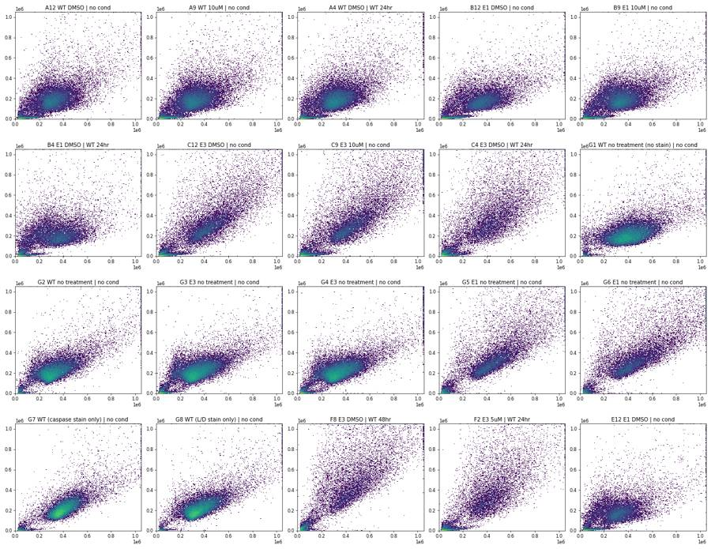
18
tool call · Read
{
"file_path": "/task/work/scatter_log.png"
}19
tool output
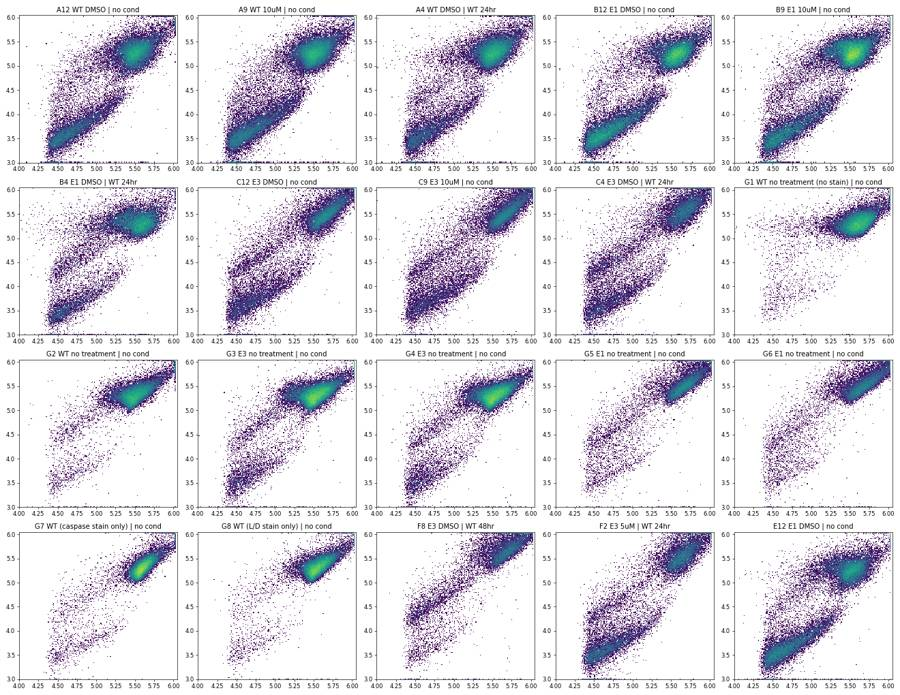
21
tool call · Bash
cd /task; cat > work/plot2.py <<'EOF'
import sys; sys.path.insert(0,'/task/work')
from common import *
import matplotlib; matplotlib.use('Agg'); import matplotlib.pyplot as plt
wells=['G1','G7','G8','G2','A12','A9','A4','A1','B12','B9','B4','B1','C12','C9','C4','C1','G3','G5','E4','F8']
def lg(x): return np.log10(np.clip(x,10,None))
for name,sel in [('all',lambda d: np.ones(len(d),bool)),('cells',lambda d:(d['FSC-A']>1.2e5)&(d['SSC-A']>6e4)&(d['FSC-A']<1.04e6)&(d['SSC-A']<1.04e6)), ('small',lambda d:(d['FSC-A']<=1.2e5)|(d['SSC-A']<=6e4))]:
fig,axs=plt.subplots(4,5,figsize=(22,17))
for ax,w in zip(axs.ravel(),wells):
d=load(w); d=d[sel(d)]
ax.hist2d(lg(d['BL1-A']),lg(d['BL2-A']),bins=200,range=[[1,6.05],[1,6.05]],norm=matplotlib.colors.LogNorm(),cmap='viridis')
r=lay[lay.well==w].iloc[0]; ax.set_title(f"{w} {r['sample']} | {r.conditioned_media[:7]} n={len(d)}"); ax.grid(alpha=.3)
ax.set_xlabel('log10 BL1-A'); ax.set_ylabel('log10 BL2-A')
fig.tight_layout(); fig.savefig(f'work/bl_{name}.png',dpi=60)
EOF
python3 -I work/plot2.py22
tool output
(Bash completed with no output)
23
tool call · Read
{
"file_path": "/task/work/bl_cells.png"
}24
tool output
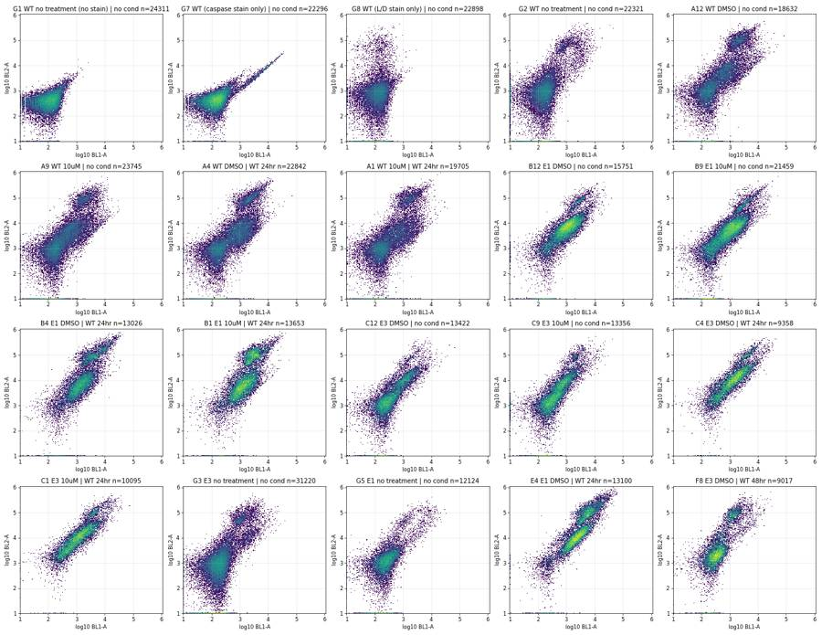
25
tool call · Read
{
"file_path": "/task/work/bl_small.png"
}26
tool output
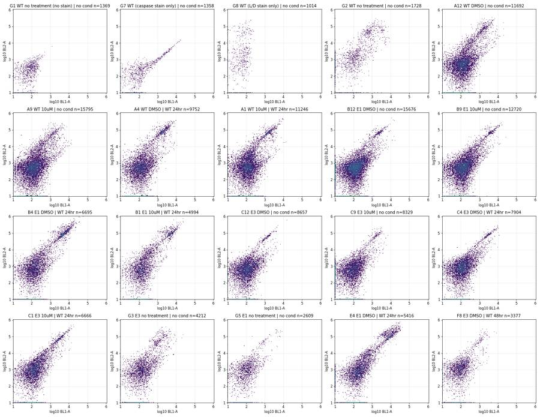
28
tool call · Bash
cd /task; cat > work/plot3.py <<'EOF'
import sys; sys.path.insert(0,'/task/work')
from common import *
import matplotlib; matplotlib.use('Agg'); import matplotlib.pyplot as plt
wells=['G2','A12','A9','A4','B12','B4','C12','C4','E4','F8','G5','G3']
def lg(x,lo=10): return np.log10(np.clip(x,lo,None))
fig,axs=plt.subplots(3,len(wells),figsize=(4*len(wells),12))
for j,w in enumerate(wells):
d=load(w)
r=lay[lay.well==w].iloc[0]
dead=(d['BL2-A']>10**4.4)
casp=(d['BL1-A']>10**3.0)&~dead
neg=~dead&~casp
for i,(m,t) in enumerate([(neg,'BL1<1e3 & BL2<10^4.4'),(casp,'BL1>1e3,BL2<10^4.4'),(dead,'BL2>10^4.4')]):
ax=axs[i,j]
ax.hist2d(lg(d['FSC-A'][m],1e3),lg(d['SSC-A'][m],1e3),bins=150,range=[[4.3,6.05],[3,6.05]],norm=matplotlib.colors.LogNorm(),cmap='viridis')
ax.set_title(f"{w} {r['sample']}|{r.conditioned_media[:7]}\n{t} n={m.sum()}",fontsize=9); ax.grid(alpha=.3)
fig.tight_layout(); fig.savefig('work/scatter_by_stain.png',dpi=50)
EOF
python3 -I work/plot3.py29
tool output
(Bash completed with no output)
30
agent
Still exploring the raw data: checking where stained and dead events sit in scatter so I can place the cell gate without clipping apoptotic cells.
31
tool call · Read
{
"file_path": "/task/work/scatter_by_stain.png"
}32
tool output
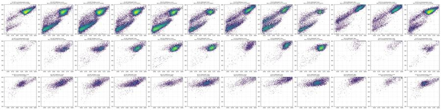
34
tool call · Bash
cd /task; cat > work/comp.py <<'EOF'
import sys; sys.path.insert(0,'/task/work')
from common import *
from matplotlib.path import Path
poly=np.array([(60e3,110e3),(60e3,500e3),(300e3,1.04e6),(1.04e6,1.04e6),(1.04e6,150e3),(500e3,60e3),(150e3,60e3)])
def cells(d): return Path(poly).contains_points(d[['FSC-A','SSC-A']].values)
for w,x,y,thr in [('G7','BL1-A','BL2-A',1500),('G8','BL2-A','BL1-A',10000)]:
for sel in ('cells','all'):
d=load(w);
if sel=='cells': d=d[cells(d)]
neg=d[d[x]<np.percentile(d[x],60)]
x0,y0=np.median(neg[x]),np.median(neg[y])
pos=d[d[x]>thr]
# robust slope: median of ratios, and linear fit
ratio=np.median((pos[y]-y0)/(pos[x]-x0))
A=np.vstack([pos[x]-x0]).T
sl=np.linalg.lstsq(A,pos[y]-y0,rcond=None)[0][0]
print(w,sel,f'{x}->{y}','n_pos',len(pos),'neg med',x0,y0,'median ratio',round(ratio,4),'lsq slope',round(sl,4), 'IQR ratio',np.percentile((pos[y]-y0)/(pos[x]-x0),[10,25,75,90]).round(4))
# also in G1 unstained autofluorescence relation
d=load('G1'); d=d[cells(d)]
print('G1 AF BL1 med',np.median(d['BL1-A']),'BL2 med',np.median(d['BL2-A']), np.percentile(d['BL1-A'],[1,50,99,99.9]), np.percentile(d['BL2-A'],[1,50,99,99.9]))
print(np.corrcoef(d['BL1-A'],d['BL2-A']))
EOF
python3 -I work/comp.py35
tool output
G7 cells BL1-A->BL2-A n_pos 856 neg med 88.0 353.0 median ratio 0.9103 lsq slope 0.9167 IQR ratio [0.8103 0.8603 0.9644 1.1198] G7 all BL1-A->BL2-A n_pos 1177 neg med 85.0 338.0 median ratio 0.9287 lsq slope 0.9794 IQR ratio [0.8068 0.8649 1.1206 1.6238] G8 cells BL2-A->BL1-A n_pos 989 neg med 195.0 100.0 median ratio 0.0006 lsq slope 0.0006 IQR ratio [-0.0027 -0.0008 0.0025 0.0077] G8 all BL2-A->BL1-A n_pos 1263 neg med 198.0 96.0 median ratio 0.001 lsq slope 0.0019 IQR ratio [-0.0027 -0.0006 0.0048 0.0139] G1 AF BL1 med 94.0 BL2 med 371.0 [-93. 94. 401. 886.763] [ 9.01 371. 1925. 4381.788] [[1. 0.59993488] [0.59993488 1. ]]
37
tool call · Bash
cd /task; python3 -I -c "
import flowkit as fk, inspect
print(fk.__version__)
print(inspect.signature(fk.Matrix.__init__))
print(inspect.signature(fk.GatingStrategy.add_comp_matrix))
print(inspect.signature(fk.GatingStrategy.add_transform))
print(inspect.signature(fk.GatingStrategy.add_gate))
print(inspect.signature(fk.GatingStrategy.gate_sample))
print(inspect.signature(fk.Dimension.__init__))
print(inspect.signature(fk.transforms.LogicleTransform.__init__))
print(inspect.signature(fk.gates.PolygonGate.__init__))
print(inspect.signature(fk.gates.RectangleGate.__init__))
print(inspect.signature(fk.export_gatingml))
print([m for m in dir(fk.GatingStrategy) if not m.startswith('_')])
"38
tool output
1.2.3 (self, spill_data_or_file, detectors, fluorochromes=None, null_channels=None) (self, matrix_id, matrix) (self, transform_id, transform) (self, gate, gate_path, sample_id=None) (self, sample, cache_events=False, verbose=False) (self, dimension_id, compensation_ref='uncompensated', transformation_ref=None, range_min=None, range_max=None) (self, param_t, param_w, param_m, param_a) (self, gate_name, dimensions, vertices, use_complement=False) (self, gate_name, dimensions, use_complement=False) (gating_strategy, file_handle, sample_id=None) ['add_comp_matrix', 'add_gate', 'add_transform', 'clear_cache', 'export_gate_hierarchy_image', 'find_matching_gate_paths', 'gate_sample', 'get_child_gate_ids', 'get_comp_matrix', 'get_gate', 'get_gate_hierarchy', 'get_gate_ids', 'get_max_depth', 'get_parent_gate_id', 'get_root_gates', 'get_transform', 'is_custom_gate', 'remove_gate', 'rename_gate', 'resolver']
40
tool call · Bash
cd /task; cat > work/plot4.py <<'EOF'
import sys; sys.path.insert(0,'/task/work')
from common import *
from matplotlib.path import Path
import matplotlib; matplotlib.use('Agg'); import matplotlib.pyplot as plt
poly=np.array([(60e3,110e3),(60e3,500e3),(300e3,1.04e6),(1.04e6,1.04e6),(1.04e6,150e3),(500e3,60e3),(150e3,60e3)])
def cells(d): return Path(poly).contains_points(d[['FSC-A','SSC-A']].values)
wells=['G1','G7','G8','G2','A12','A9','A4','A1','B12','B9','B4','B1','C12','C9','C4','C1','G3','G5','E4','F8']
fig,axs=plt.subplots(4,5,figsize=(22,17))
for ax,w in zip(axs.ravel(),wells):
d=load(w); d=d[cells(d)]
ax.hist2d(d['FSC-A'],d['FSC-H'],bins=200,range=[[0,1.05e6],[0,1.05e6]],norm=matplotlib.colors.LogNorm(),cmap='viridis')
r=lay[lay.well==w].iloc[0]; ax.set_title(f"{w} {r['sample']} | {r.conditioned_media[:7]}")
fig.tight_layout(); fig.savefig('work/singlets.png',dpi=55)
fig,axs=plt.subplots(4,5,figsize=(22,17))
for ax,w in zip(axs.ravel(),wells):
d=load(w); d=d[cells(d)]
ax.hist2d(d['FSC-A'],d['FSC-H']/d['FSC-A'],bins=200,range=[[0,1.05e6],[0,1.5]],norm=matplotlib.colors.LogNorm(),cmap='viridis')
r=lay[lay.well==w].iloc[0]; ax.set_title(f"{w} {r['sample']} | {r.conditioned_media[:7]}")
fig.tight_layout(); fig.savefig('work/singlets_ratio.png',dpi=55)
c=150.
fig,axs=plt.subplots(4,5,figsize=(22,17))
for ax,w in zip(axs.ravel(),wells):
d=load(w); d=d[cells(d)]
b1=d['BL1-A']; b2=d['BL2-A']-0.91*d['BL1-A']
ax.hist2d(np.arcsinh(b1/c),np.arcsinh(b2/c),bins=200,range=[[-2,9],[-4,10]],norm=matplotlib.colors.LogNorm(),cmap='viridis')
r=lay[lay.well==w].iloc[0]; ax.set_title(f"{w} {r['sample']} | {r.conditioned_media[:7]} n={len(d)}"); ax.grid(alpha=.3)
tk=[0,100,1000,1e4,1e5]; ax.set_xticks(np.arcsinh(np.array(tk)/c)); ax.set_xticklabels(['0','1e2','1e3','1e4','1e5'])
tk=[-1000,0,1000,1e4,1e5,1e6]; ax.set_yticks(np.arcsinh(np.array(tk)/c)); ax.set_yticklabels(['-1e3','0','1e3','1e4','1e5','1e6'])
ax.set_xlabel('BL1-A caspase'); ax.set_ylabel('comp BL2-A sytox')
fig.tight_layout(); fig.savefig('work/bl_comp.png',dpi=60)
EOF
python3 -I work/plot4.py41
tool output
(Bash completed with no output)
42
tool call · Read
{
"file_path": "/task/work/bl_comp.png"
}43
tool output
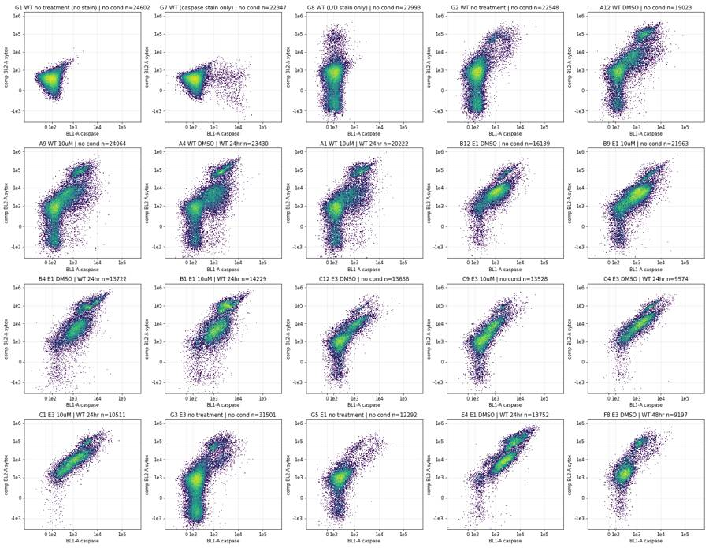
44
tool call · Read
{
"file_path": "/task/work/singlets.png"
}45
tool output
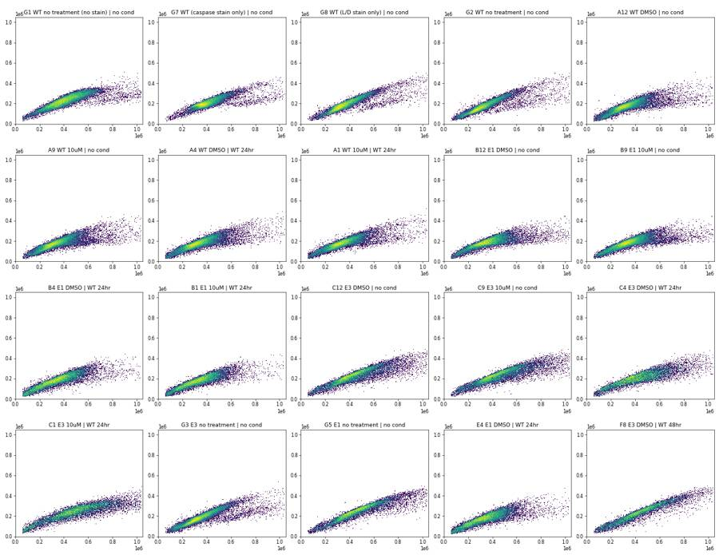
47
tool call · Bash
cd /task; cat > work/plot5.py <<'EOF'
import sys; sys.path.insert(0,'/task/work')
from common import *
from matplotlib.path import Path
import matplotlib; matplotlib.use('Agg'); import matplotlib.pyplot as plt
poly=np.array([(60e3,110e3),(60e3,500e3),(300e3,1.04e6),(1.04e6,1.04e6),(1.04e6,150e3),(500e3,60e3),(150e3,60e3)])
def cells(d): return Path(poly).contains_points(d[['FSC-A','SSC-A']].values)
wells=['G1','G2','A12','A4','B12','B4','C12','C4','G3','G5','E4','F8']
fig,axs=plt.subplots(3,len(wells),figsize=(4*len(wells),12))
for j,w in enumerate(wells):
d=load(w); d=d[cells(d)]
r=lay[lay.well==w].iloc[0]
axs[0,j].hist2d(d['FSC-A'],d['FSC-W'],bins=150,range=[[0,1.05e6],[0,400]],norm=matplotlib.colors.LogNorm()); axs[0,j].set_title(f"{w} {r['sample']} FSC-A/W")
axs[1,j].hist2d(d['SSC-A'],d['SSC-W'],bins=150,range=[[0,1.05e6],[0,400]],norm=matplotlib.colors.LogNorm()); axs[1,j].set_title('SSC-A/W')
axs[2,j].hist2d(d['FSC-A'],d['FSC-H'],bins=150,range=[[0,1.05e6],[0,0.55e6]],norm=matplotlib.colors.LogNorm()); axs[2,j].set_title('FSC-A/H')
for a in axs[:,j]: a.grid(alpha=.3)
fig.tight_layout(); fig.savefig('work/singlets2.png',dpi=50)
d=load('G2'); d=d[cells(d)]
print(d[['FSC-W','SSC-W','BL1-W']].describe())
EOF
python3 -I work/plot5.py48
tool output
FSC-W SSC-W BL1-W count 22548.000000 22548.000000 22548.000000 mean 132.311247 133.097614 1.441990 std 24.348936 20.336391 8.160657 min 60.000000 50.000000 0.000000 25% 119.000000 124.000000 0.000000 50% 128.000000 129.000000 0.000000 75% 143.000000 135.000000 0.000000 max 375.000000 375.000000 172.000000
49
agent
Checking singlet discrimination (area vs height vs width) before I fix the gates.
50
tool call · Read
{
"file_path": "/task/work/singlets2.png"
}51
tool output
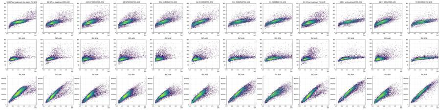
53
tool call · Bash
cd /task; cat > work/sing.py <<'EOF'
import sys; sys.path.insert(0,'/task/work')
from common import *
from matplotlib.path import Path
poly=np.array([(60e3,110e3),(60e3,500e3),(300e3,1.04e6),(1.04e6,1.04e6),(1.04e6,150e3),(500e3,60e3),(150e3,60e3)])
def cells(d): return Path(poly).contains_points(d[['FSC-A','SSC-A']].values)
for grp,wells in [('WT',['G1','G2','A12','A4','D9','D1']),('E1',['B12','B4','E4','E9','B1']),('E3',['C12','C4','F8','F12','C9']),('Glab',['G3','G4','G5','G6'])]:
d=pd.concat([load(w) for w in wells]); d=d[cells(d)]
r=d['FSC-H']/d['FSC-A']
print(grp)
for lo in np.arange(6e4,1.04e6,8e4):
m=(d['FSC-A']>=lo)&(d['FSC-A']<lo+8e4)
q=np.percentile(r[m],[1,5,10,25,50,75,95,99])
print(f' A {lo/1e3:5.0f}k n={m.sum():6d} ratio pct1,5,10,25,50,75,95,99:',q.round(3))
EOF
python3 -I work/sing.py54
tool output
WT A 60k n= 3546 ratio pct1,5,10,25,50,75,95,99: [0.318 0.385 0.418 0.497 0.621 0.74 0.923 1.168] A 140k n= 10139 ratio pct1,5,10,25,50,75,95,99: [0.328 0.4 0.436 0.484 0.555 0.654 0.758 0.824] A 220k n= 32768 ratio pct1,5,10,25,50,75,95,99: [0.383 0.442 0.464 0.501 0.549 0.599 0.662 0.71 ] A 300k n= 37201 ratio pct1,5,10,25,50,75,95,99: [0.383 0.437 0.461 0.5 0.54 0.579 0.632 0.676] A 380k n= 22823 ratio pct1,5,10,25,50,75,95,99: [0.339 0.4 0.43 0.481 0.53 0.568 0.621 0.658] A 460k n= 11925 ratio pct1,5,10,25,50,75,95,99: [0.29 0.346 0.38 0.456 0.516 0.554 0.604 0.636] A 540k n= 5585 ratio pct1,5,10,25,50,75,95,99: [0.257 0.297 0.321 0.399 0.487 0.526 0.57 0.597] A 620k n= 2646 ratio pct1,5,10,25,50,75,95,99: [0.245 0.27 0.287 0.336 0.44 0.493 0.537 0.563] A 700k n= 1407 ratio pct1,5,10,25,50,75,95,99: [0.224 0.252 0.268 0.305 0.378 0.458 0.514 0.55 ] A 780k n= 885 ratio pct1,5,10,25,50,75,95,99: [0.205 0.234 0.253 0.288 0.345 0.428 0.496 0.527] A 860k n= 618 ratio pct1,5,10,25,50,75,95,99: [0.203 0.223 0.241 0.274 0.313 0.38 0.476 0.513] A 940k n= 438 ratio pct1,5,10,25,50,75,95,99: [0.181 0.211 0.22 0.262 0.307 0.368 0.446 0.485] A 1020k n= 95 ratio pct1,5,10,25,50,75,95,99: [0.199 0.213 0.228 0.259 0.287 0.352 0.445 0.479] E1 A 60k n= 4254 ratio pct1,5,10,25,50,75,95,99: [0.316 0.378 0.418 0.506 0.621 0.724 0.916 1.104] A 140k n= 8584 ratio pct1,5,10,25,50,75,95,99: [0.312 0.389 0.435 0.516 0.597 0.665 0.765 0.852] A 220k n= 13938 ratio pct1,5,10,25,50,75,95,99: [0.331 0.422 0.46 0.518 0.574 0.618 0.674 0.715] A 300k n= 18926 ratio pct1,5,10,25,50,75,95,99: [0.353 0.421 0.45 0.493 0.538 0.578 0.624 0.656] A 380k n= 14247 ratio pct1,5,10,25,50,75,95,99: [0.323 0.382 0.407 0.451 0.504 0.551 0.597 0.623] A 460k n= 7737 ratio pct1,5,10,25,50,75,95,99: [0.293 0.337 0.362 0.409 0.469 0.52 0.573 0.601] A 540k n= 3600 ratio pct1,5,10,25,50,75,95,99: [0.258 0.298 0.322 0.368 0.431 0.493 0.553 0.58 ] A 620k n= 1754 ratio pct1,5,10,25,50,75,95,99: [0.234 0.266 0.284 0.322 0.386 0.456 0.526 0.56 ] A 700k n= 894 ratio pct1,5,10,25,50,75,95,99: [0.224 0.248 0.261 0.294 0.344 0.407 0.49 0.532] A 780k n= 557 ratio pct1,5,10,25,50,75,95,99: [0.206 0.229 0.243 0.272 0.312 0.365 0.45 0.488] A 860k n= 347 ratio pct1,5,10,25,50,75,95,99: [0.188 0.217 0.228 0.256 0.301 0.341 0.423 0.485] A 940k n= 233 ratio pct1,5,10,25,50,75,95,99: [0.182 0.197 0.207 0.237 0.274 0.321 0.423 0.454] A 1020k n= 44 ratio pct1,5,10,25,50,75,95,99: [0.189 0.209 0.218 0.245 0.281 0.317 0.386 0.423] E3 A 60k n= 1858 ratio pct1,5,10,25,50,75,95,99: [0.322 0.392 0.446 0.545 0.658 0.772 0.897 1.077] A 140k n= 3371 ratio pct1,5,10,25,50,75,95,99: [0.286 0.364 0.405 0.485 0.585 0.684 0.79 0.841] A 220k n= 5120 ratio pct1,5,10,25,50,75,95,99: [0.294 0.381 0.427 0.486 0.541 0.601 0.661 0.717] A 300k n= 9850 ratio pct1,5,10,25,50,75,95,99: [0.339 0.416 0.451 0.501 0.548 0.584 0.618 0.642] A 380k n= 10808 ratio pct1,5,10,25,50,75,95,99: [0.337 0.399 0.429 0.488 0.539 0.568 0.598 0.618] A 460k n= 8593 ratio pct1,5,10,25,50,75,95,99: [0.326 0.372 0.402 0.467 0.524 0.551 0.578 0.595] A 540k n= 6276 ratio pct1,5,10,25,50,75,95,99: [0.289 0.342 0.372 0.435 0.499 0.533 0.562 0.583] A 620k n= 3958 ratio pct1,5,10,25,50,75,95,99: [0.278 0.322 0.357 0.413 0.471 0.511 0.546 0.567] A 700k n= 2633 ratio pct1,5,10,25,50,75,95,99: [0.255 0.309 0.339 0.389 0.442 0.488 0.53 0.55 ] A 780k n= 1683 ratio pct1,5,10,25,50,75,95,99: [0.238 0.289 0.317 0.367 0.423 0.471 0.513 0.535] A 860k n= 1026 ratio pct1,5,10,25,50,75,95,99: [0.219 0.272 0.299 0.35 0.402 0.448 0.494 0.524] A 940k n= 623 ratio pct1,5,10,25,50,75,95,99: [0.22 0.26 0.286 0.33 0.389 0.435 0.48 0.501] A 1020k n= 137 ratio pct1,5,10,25,50,75,95,99: [0.221 0.237 0.27 0.315 0.385 0.43 0.466 0.483] Glab A 60k n= 1792 ratio pct1,5,10,25,50,75,95,99: [0.337 0.394 0.435 0.51 0.612 0.707 0.853 0.986] A 140k n= 5687 ratio pct1,5,10,25,50,75,95,99: [0.313 0.391 0.428 0.479 0.534 0.612 0.731 0.806] A 220k n= 17654 ratio pct1,5,10,25,50,75,95,99: [0.372 0.443 0.464 0.492 0.522 0.558 0.624 0.673] A 300k n= 23967 ratio pct1,5,10,25,50,75,95,99: [0.393 0.448 0.47 0.501 0.534 0.566 0.608 0.632] A 380k n= 15714 ratio pct1,5,10,25,50,75,95,99: [0.359 0.438 0.469 0.505 0.537 0.564 0.596 0.618] A 460k n= 9336 ratio pct1,5,10,25,50,75,95,99: [0.307 0.422 0.462 0.505 0.535 0.556 0.582 0.603] A 540k n= 4978 ratio pct1,5,10,25,50,75,95,99: [0.273 0.328 0.413 0.486 0.52 0.542 0.567 0.586] A 620k n= 2928 ratio pct1,5,10,25,50,75,95,99: [0.264 0.295 0.331 0.442 0.497 0.523 0.553 0.573] A 700k n= 1877 ratio pct1,5,10,25,50,75,95,99: [0.261 0.285 0.308 0.396 0.471 0.505 0.537 0.555] A 780k n= 1247 ratio pct1,5,10,25,50,75,95,99: [0.241 0.28 0.299 0.361 0.445 0.486 0.516 0.534] A 860k n= 832 ratio pct1,5,10,25,50,75,95,99: [0.217 0.257 0.284 0.341 0.427 0.468 0.498 0.524] A 940k n= 593 ratio pct1,5,10,25,50,75,95,99: [0.205 0.253 0.28 0.323 0.408 0.448 0.489 0.509] A 1020k n= 115 ratio pct1,5,10,25,50,75,95,99: [0.216 0.259 0.288 0.332 0.406 0.433 0.463 0.487]
56
tool call · Bash
cd /task; cat > work/common2.py <<'EOF'
import sys; sys.path.insert(0,'/task/work')
from common import *
from matplotlib.path import Path
CELLS=np.array([(60e3,110e3),(60e3,500e3),(300e3,1.04e6),(1.04e6,1.04e6),(1.04e6,150e3),(500e3,60e3),(150e3,60e3)])
SING=np.array([(60e3,20e3),(300e3,126e3),(600e3,222e3),(1.04e6,322e3),(1.04e6,582e3),(600e3,372e3),(300e3,216e3),(60e3,80e3)])
SP=0.91
def gated(w):
d=load(w)
c=Path(CELLS).contains_points(d[['FSC-A','SSC-A']].values)
s=c&Path(SING).contains_points(d[['FSC-A','FSC-H']].values)
d=d.assign(cells=c,sing=s,casp=d['BL1-A'],sytox=d['BL2-A']-SP*d['BL1-A'])
return d
EOF
cat > work/plot6.py <<'EOF'
import sys; sys.path.insert(0,'/task/work')
from common2 import *
import matplotlib; matplotlib.use('Agg'); import matplotlib.pyplot as plt
c=150.
rows='ABCDEFG'
fig,axs=plt.subplots(7,12,figsize=(48,28))
for i,rw in enumerate(rows):
for j in range(12):
w=f'{rw}{j+1}'; ax=axs[i,j]
if w not in set(lay.well): ax.axis('off'); continue
d=gated(w); d=d[d.sing]
ax.hist2d(np.arcsinh(d.casp/c),np.arcsinh(d.sytox/c),bins=150,range=[[-2,9],[-4,10]],norm=matplotlib.colors.LogNorm(),cmap='viridis')
r=lay[lay.well==w].iloc[0]; ax.set_title(f"{w} {r['sample']} | {r.conditioned_media[:7]} n={len(d)}"); ax.grid(alpha=.3)
tk=[0,100,1000,1e4,1e5]; ax.set_xticks(np.arcsinh(np.array(tk)/c)); ax.set_xticklabels(['0','1e2','1e3','1e4','1e5'])
tk=[-1000,0,1000,1e4,1e5,1e6]; ax.set_yticks(np.arcsinh(np.array(tk)/c)); ax.set_yticklabels(['-1e3','0','1e3','1e4','1e5','1e6'])
fig.tight_layout(); fig.savefig('work/plate_bl.png',dpi=40)
EOF
python3 -I work/plot6.py57
tool output
(Bash completed with no output)
58
tool call · Read
{
"file_path": "/task/work/plate_bl.png"
}59
tool output
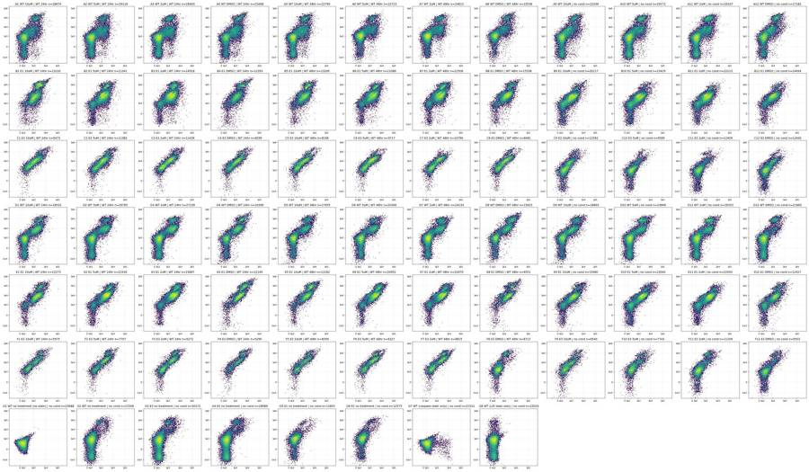
61
tool call · Bash
cd /task; cat > work/hist1.py <<'EOF'
import sys; sys.path.insert(0,'/task/work')
from common2 import *
groups={'WT noCM':['A9','A10','A11','A12','D9','D10','D11','D12'],'WT CM':['A1','A2','A3','A4','A5','A6','A7','A8','D1','D4','D5','D8'],
'E1 noCM':['B9','B10','B11','B12','E9','E10','E11','E12'],'E1 CM':['B1','B2','B3','B4','B5','B8','E1','E4','E5','E8'],
'E3 noCM':['C9','C10','C11','C12','F9','F10','F11','F12'],'E3 CM':['C1','C2','C3','C4','C5','C8','F1','F4','F5'],'G untreated':['G2','G3','G4','G5','G6']}
edges=np.arange(3.0,6.01,0.1)
print('log10 comp-SYTOX histogram (% of singlets)')
print('bin '+' '.join(f'{e:5.1f}' for e in edges[:-1]))
for g,ws in groups.items():
d=pd.concat([gated(w) for w in ws]); d=d[d.sing]
h=np.histogram(np.log10(np.clip(d.sytox,1,None)),edges)[0]/len(d)*100
print(f'{g:12s}'+' '.join(f'{x:5.1f}' for x in h))
print('log10 ratio sytox/casp for casp>300 & sytox>1000')
edges=np.arange(-0.5,2.51,0.1)
print('bin '+' '.join(f'{e:5.1f}' for e in edges[:-1]))
for g,ws in groups.items():
d=pd.concat([gated(w) for w in ws]); d=d[d.sing]
m=(d.casp>300)&(d.sytox>1000)
h=np.histogram(np.log10(d.sytox[m]/d.casp[m]),edges)[0]/len(d)*100
print(f'{g:12s}'+' '.join(f'{x:5.1f}' for x in h))
print('log10 casp histogram for sytox<2e4')
edges=np.arange(1.5,5.01,0.1)
print('bin '+' '.join(f'{e:5.1f}' for e in edges[:-1]))
for g,ws in list(groups.items())+[('G1',['G1']),('G7',['G7']),('G8',['G8'])]:
d=pd.concat([gated(w) for w in ws]); d=d[d.sing]
m=(d.sytox<2e4)
h=np.histogram(np.log10(np.clip(d.casp[m],1,None)),edges)[0]/m.sum()*100
print(f'{g:12s}'+' '.join(f'{x:5.1f}' for x in h))
EOF
python3 -I work/hist1.py62
tool output
log10 comp-SYTOX histogram (% of singlets) bin 3.0 3.1 3.2 3.3 3.4 3.5 3.6 3.7 3.8 3.9 4.0 4.1 4.2 4.3 4.4 4.5 4.6 4.7 4.8 4.9 5.0 5.1 5.2 5.3 5.4 5.5 5.6 5.7 5.8 5.9 WT noCM 5.2 4.4 3.6 3.0 2.8 2.7 2.9 2.9 2.8 2.5 1.9 1.3 0.9 0.7 0.7 0.9 1.2 1.8 2.5 2.1 1.6 0.9 0.4 0.2 0.1 0.0 0.0 0.0 0.0 0.0 WT CM 6.2 5.4 4.4 3.6 3.2 3.1 3.1 3.1 3.0 2.7 2.2 1.6 1.2 0.8 0.7 0.8 1.1 1.5 1.9 1.8 1.5 1.0 0.6 0.3 0.1 0.1 0.0 0.0 0.0 0.0 E1 noCM 3.8 3.9 3.9 4.3 5.1 6.2 7.5 8.4 8.6 7.4 5.3 3.2 1.8 1.2 1.2 1.2 1.1 1.1 1.0 0.7 0.6 0.3 0.2 0.1 0.0 0.0 0.0 0.0 0.0 0.0 E1 CM 2.6 2.9 3.2 3.8 4.4 5.3 6.2 6.9 7.3 7.0 6.1 4.5 2.9 1.9 1.5 1.7 2.2 2.6 3.4 3.5 2.9 1.9 1.1 0.6 0.3 0.1 0.1 0.0 0.0 0.0 E3 noCM 7.7 7.4 6.3 5.2 4.0 3.4 3.3 3.3 3.4 3.3 3.0 2.4 1.9 1.4 1.1 0.9 1.0 1.2 1.5 1.0 0.6 0.4 0.3 0.1 0.0 0.0 0.0 0.0 0.0 0.0 E3 CM 3.4 4.3 5.2 5.2 4.9 4.7 4.9 5.3 5.9 6.5 6.7 6.3 5.7 4.5 3.4 2.4 1.6 1.6 1.7 2.3 1.8 1.2 0.8 0.4 0.2 0.1 0.0 0.0 0.0 0.0 G untreated 6.7 5.7 4.2 3.1 2.3 1.9 1.6 1.3 1.1 0.9 0.8 0.6 0.6 0.5 0.5 0.8 1.1 1.1 0.9 0.8 0.5 0.2 0.1 0.0 0.0 0.0 0.0 0.0 0.0 0.0 log10 ratio sytox/casp for casp>300 & sytox>1000 bin -0.5 -0.4 -0.3 -0.2 -0.1 -0.0 0.1 0.2 0.3 0.4 0.5 0.6 0.7 0.8 0.9 1.0 1.1 1.2 1.3 1.4 1.5 1.6 1.7 1.8 1.9 2.0 2.1 2.2 2.3 2.4 WT noCM 0.1 0.1 0.2 0.2 0.3 0.5 0.7 1.1 1.6 2.2 2.9 2.9 2.9 2.6 2.4 1.9 1.6 1.5 1.5 1.8 2.0 1.9 1.4 1.0 0.6 0.3 0.1 0.0 0.0 0.0 WT CM 0.1 0.2 0.3 0.4 0.6 0.9 1.1 1.6 2.1 2.7 3.3 3.2 2.9 2.6 2.3 2.0 1.7 1.6 1.4 1.3 1.7 1.7 1.2 0.9 0.6 0.4 0.2 0.1 0.0 0.0 E1 noCM 0.0 0.1 0.2 0.4 0.7 1.4 2.6 4.6 7.3 8.9 9.0 9.0 7.9 6.0 4.1 2.7 2.8 2.1 1.1 0.6 0.3 0.2 0.1 0.1 0.0 0.0 0.0 0.0 0.0 0.0 E1 CM 0.2 0.3 0.4 0.7 1.1 1.7 2.9 4.5 6.7 8.7 9.2 7.8 6.4 5.0 3.8 3.5 4.4 5.0 3.9 2.6 1.8 1.3 0.8 0.4 0.2 0.1 0.0 0.0 0.0 0.0 E3 noCM 0.0 0.0 0.0 0.0 0.1 0.1 0.2 0.6 1.3 2.7 4.4 5.0 5.0 5.2 4.8 3.9 2.6 1.9 1.7 1.4 1.3 1.1 0.8 0.7 0.3 0.1 0.0 0.0 0.0 0.0 E3 CM 0.0 0.0 0.1 0.1 0.1 0.2 0.4 0.7 1.6 3.3 6.5 9.5 11.6 12.0 9.9 6.7 4.6 4.3 3.9 2.4 1.2 0.6 0.3 0.1 0.0 0.0 0.0 0.0 0.0 0.0 G untreated 0.0 0.0 0.0 0.0 0.0 0.1 0.2 0.4 0.7 1.4 1.9 1.8 1.5 1.2 1.0 0.8 0.8 0.8 0.8 0.7 0.9 1.0 0.9 0.7 0.5 0.3 0.2 0.1 0.0 0.0 log10 casp histogram for sytox<2e4 bin 1.5 1.6 1.7 1.8 1.9 2.0 2.1 2.2 2.3 2.4 2.5 2.6 2.7 2.8 2.9 3.0 3.1 3.2 3.3 3.4 3.5 3.6 3.7 3.8 3.9 4.0 4.1 4.2 4.3 4.4 4.5 4.6 4.7 4.8 4.9 WT noCM 1.2 1.9 2.6 3.6 5.6 7.5 10.2 11.6 10.8 7.5 4.6 3.2 2.8 2.8 2.8 2.8 2.7 2.5 2.2 1.8 1.1 0.6 0.3 0.1 0.1 0.0 0.0 0.0 0.0 0.0 0.0 0.0 0.0 0.0 0.0 WT CM 1.2 1.9 2.6 3.6 5.4 7.1 9.5 10.5 9.4 6.5 3.8 2.8 2.7 3.0 3.4 3.5 3.5 3.6 3.2 2.5 1.7 0.9 0.4 0.2 0.1 0.0 0.0 0.0 0.0 0.0 0.0 0.0 0.0 0.0 0.0 E1 noCM 0.2 0.4 0.6 0.9 1.5 2.1 3.4 4.7 5.6 5.2 4.4 4.1 4.8 6.2 7.5 8.4 9.0 8.9 7.8 5.8 3.8 2.0 0.9 0.3 0.1 0.1 0.0 0.0 0.0 0.0 0.0 0.0 0.0 0.0 0.0 E1 CM 0.1 0.2 0.4 0.5 0.9 1.3 2.2 2.9 3.4 3.2 2.9 3.2 4.2 5.8 7.5 9.1 10.1 10.6 9.5 8.4 6.4 3.8 1.7 0.6 0.2 0.1 0.0 0.0 0.0 0.0 0.0 0.0 0.0 0.0 0.0 E3 noCM 0.4 0.9 1.2 1.8 2.9 4.3 7.2 10.0 12.3 12.4 10.7 8.0 6.3 4.9 3.8 3.1 2.6 1.9 1.2 0.7 0.4 0.2 0.1 0.0 0.0 0.0 0.0 0.0 0.0 0.0 0.0 0.0 0.0 0.0 0.0 E3 CM 0.1 0.2 0.3 0.5 0.9 1.3 2.4 3.9 6.0 7.9 9.1 8.8 7.7 7.5 7.1 7.6 7.6 7.0 5.4 3.7 2.4 1.2 0.5 0.2 0.1 0.0 0.0 0.0 0.0 0.0 0.0 0.0 0.0 0.0 0.0 G untreated 1.2 2.0 2.7 3.9 6.0 8.4 11.9 14.2 14.3 11.0 6.7 3.7 2.2 1.3 0.8 0.5 0.5 0.5 0.5 0.4 0.3 0.2 0.1 0.0 0.0 0.0 0.0 0.0 0.0 0.0 0.0 0.0 0.0 0.0 0.0 G1 3.1 4.5 5.7 7.7 9.9 11.2 12.6 10.7 6.9 3.0 1.2 0.4 0.2 0.1 0.0 0.0 0.0 0.0 0.0 0.0 0.0 0.0 0.0 0.0 0.0 0.0 0.0 0.0 0.0 0.0 0.0 0.0 0.0 0.0 0.0 G7 2.1 3.0 4.1 5.6 8.3 10.1 12.9 13.5 11.0 6.6 3.1 1.7 0.8 0.7 0.4 0.3 0.3 0.3 0.3 0.3 0.4 0.3 0.3 0.3 0.3 0.2 0.1 0.0 0.0 0.0 0.0 0.0 0.0 0.0 0.0 G8 2.5 4.3 5.3 6.8 9.3 11.4 13.7 12.7 8.8 4.3 1.5 0.7 0.3 0.1 0.1 0.0 0.0 0.0 0.0 0.0 0.0 0.0 0.0 0.0 0.0 0.0 0.0 0.0 0.0 0.0 0.0 0.0 0.0 0.0 0.0
64
tool call · Bash
cd /task; cat > work/build_gates.py <<'EOF'
import flowkit as fk, numpy as np, pandas as pd
from flowkit import Dimension, GatingStrategy, Matrix
from flowkit.gates import PolygonGate, RectangleGate
from flowkit.transforms import LogicleTransform
OUT='/task/outputs/'
lay=pd.read_csv('/task/inputs/plate_layout.csv')
CELLS=[(60e3,110e3),(60e3,500e3),(300e3,1.04e6),(1.04e6,1.04e6),(1.04e6,150e3),(500e3,60e3),(150e3,60e3)]
SING=[(60e3,20e3),(300e3,126e3),(600e3,222e3),(1.04e6,322e3),(1.04e6,582e3),(600e3,372e3),(300e3,216e3),(60e3,80e3)]
SPILL=0.91 # CellEvent (BL1) signal appearing in BL2, from G7 caspase-only control
SYTOX_THR=2.5e4 # compensated BL2-A
CASP_THR=600. # BL1-A
g=GatingStrategy()
g.add_comp_matrix('spill_ctrl', Matrix(np.array([[1.0,SPILL],[0.0,1.0]]), detectors=['BL1-A','BL2-A'], fluorochromes=['CellEvent_Casp37','SYTOX_AADvanced']))
xf=LogicleTransform(param_t=1048576, param_w=1.0, param_m=4.5, param_a=0)
g.add_transform('logicle', xf)
def T(v): return float(xf.apply(np.array([v],dtype=float))[0])
g.add_gate(PolygonGate('cells',[Dimension('FSC-A','uncompensated'),Dimension('SSC-A','uncompensated')],CELLS),('root',))
g.add_gate(PolygonGate('singlets',[Dimension('FSC-A','uncompensated'),Dimension('FSC-H','uncompensated')],SING),('root','cells'))
g.add_gate(RectangleGate('live',[Dimension('BL2-A','spill_ctrl','logicle',range_min=None,range_max=T(SYTOX_THR))]),('root','cells','singlets'))
g.add_gate(RectangleGate('dead',[Dimension('BL2-A','spill_ctrl','logicle',range_min=T(SYTOX_THR),range_max=None)]),('root','cells','singlets'))
g.add_gate(RectangleGate('caspase_pos',[Dimension('BL1-A','spill_ctrl','logicle',range_min=T(CASP_THR),range_max=None)]),('root','cells','singlets','live'))
g.add_gate(RectangleGate('caspase_pos_total',[Dimension('BL1-A','spill_ctrl','logicle',range_min=T(CASP_THR),range_max=None)]),('root','cells','singlets'))
with open(OUT+'gates.xml','wb') as f: fk.export_gatingml(g,f)
g2=fk.parse_gating_xml(OUT+'gates.xml')
print(g2.get_gate_hierarchy())
POPS=[('cells','cells','all_events'),('singlets','singlets','cells'),('live','live','singlets'),('caspase_pos','marker_positive','live'),('dead','other','singlets'),('caspase_pos_total','other','singlets')]
rows=[]
for _,r in lay.iterrows():
s=fk.Sample('/task/inputs/raw/'+r.file)
rep=g2.gate_sample(s).report.set_index('gate_name')
n={'all_events':int(s.event_count)}
for p,_,_ in POPS: n[p]=int(rep.loc[p,'count'])
rows.append(dict(file=r.file,well=r.well,population='all_events',role='other',parent='none',count=n['all_events'],pct_of_parent=''))
for p,role,par in POPS:
rows.append(dict(file=r.file,well=r.well,population=p,role=role,parent=par,count=n[p],pct_of_parent=(round(100*n[p]/n[par],4) if n[par] else '')))
c=pd.DataFrame(rows); c.to_csv(OUT+'counts.csv',index=False)
print(c.head(8)); print(len(c))
EOF
python3 -I work/build_gates.py65
tool output (error)
Exit code 1
Traceback (most recent call last):
File "/task/work/build_gates.py", line 3, in <module>
from flowkit.gates import PolygonGate, RectangleGate
ModuleNotFoundError: No module named 'flowkit.gates'66
agent
Fixing an import path in the gate-building script (`fk.gates` is an attribute, not a submodule), then generating `gates.xml` and `counts.csv`.
67
tool call · Bash
cd /task; sed -i 's/^from flowkit.gates import PolygonGate, RectangleGate$/PolygonGate, RectangleGate = fk.gates.PolygonGate, fk.gates.RectangleGate/; s/^from flowkit.transforms import LogicleTransform$/LogicleTransform = fk.transforms.LogicleTransform/' work/build_gates.py; python3 -I work/build_gates.py
68
tool output
root
╰── cells
╰── singlets
├── live
│ ╰── caspase_pos
├── dead
╰── caspase_pos_total
file well ... count pct_of_parent
0 Caspase-assay-2-mlk_caspase_Group_A1.fcs A1 ... 31328
1 Caspase-assay-2-mlk_caspase_Group_A1.fcs A1 ... 20222 64.5493
2 Caspase-assay-2-mlk_caspase_Group_A1.fcs A1 ... 18874 93.334
3 Caspase-assay-2-mlk_caspase_Group_A1.fcs A1 ... 16625 88.0841
4 Caspase-assay-2-mlk_caspase_Group_A1.fcs A1 ... 3581 21.5398
5 Caspase-assay-2-mlk_caspase_Group_A1.fcs A1 ... 2249 11.9159
6 Caspase-assay-2-mlk_caspase_Group_A1.fcs A1 ... 5739 30.4069
7 Caspase-assay-2-mlk_caspase_Group_A2.fcs A2 ... 40169
[8 rows x 7 columns]
56070
tool call · Bash
cd /task; cat > work/table.py <<'EOF'
import sys; sys.path.insert(0,'/task/work')
from common2 import *
c=pd.read_csv('/task/outputs/counts.csv')
w=c.pivot(index='well',columns='population',values='count')
t=lay.set_index('well').join(w)
t['pct_cells']=100*t.cells/t.all_events; t['pct_sing']=100*t.singlets/t.cells; t['pct_live']=100*t.live/t.singlets
t['casp_live']=100*t.caspase_pos/t.live; t['casp_tot']=100*t.caspase_pos_total/t.singlets; t['dead']=100*t.dead/t.singlets
ex=[]
for well in t.index:
d=gated(well); s=d[d.sing]; lv=s[s.sytox<2.5e4]
tm=d['Time'].values
# event-rate QC: counts in 1-s bins
h=np.histogram(tm,bins=np.arange(0,tm.max()+1e-9, (tm.max())/16))[0]
ex.append(dict(well=well, bl1_med_live=np.median(lv.casp), sytox_med_live=np.median(lv.sytox), ssc_fsc=np.median(s['SSC-A']/s['FSC-A']), fsc_med=np.median(s['FSC-A']), ssc_med=np.median(s['SSC-A']),
ssc_hi=100*(s['SSC-A']>4e5).mean(), neg_bl1=np.median(lv.casp[lv.casp<400]) , rate_cv=h.std()/h.mean(), rate_min=h.min()/np.median(h), rate_max=h.max()/np.median(h), tmax=tm.max(),
casp500=100*(lv.casp>500).mean(), casp1000=100*(lv.casp>1000).mean(), conc=len(d)/ (float(1)) ))
t=t.join(pd.DataFrame(ex).set_index('well'))
t.to_csv('work/table.csv')
pd.set_option('display.width',350); pd.set_option('display.max_rows',200); pd.set_option('display.max_columns',60)
cols=['sample','conditioned_media','all_events','cells','singlets','live','pct_cells','pct_sing','pct_live','dead','casp_live','casp_tot','casp500','casp1000','bl1_med_live','neg_bl1','ssc_fsc','fsc_med','ssc_hi','rate_cv','rate_min','rate_max']
x=t[cols].copy(); x['conditioned_media']=x.conditioned_media.str[:7]
print(x.round(2).to_string())
EOF
python3 -I work/table.py71
tool output
sample conditioned_media all_events cells singlets live pct_cells pct_sing pct_live dead casp_live casp_tot casp500 casp1000 bl1_med_live neg_bl1 ssc_fsc fsc_med ssc_hi rate_cv rate_min rate_max well A1 WT 10uM WT 24hr 31328 20222 18874 16625 64.55 93.33 88.08 11.92 21.54 30.41 24.34 13.48 189.0 138.0 0.59 329296.5 5.77 0.13 0.79 1.23 A2 WT 5uM WT 24hr 40169 28161 26116 23832 70.11 92.74 91.25 8.75 24.53 30.72 26.72 18.13 187.0 135.0 0.60 332442.0 5.11 0.14 0.83 1.28 A3 WT 2uM WT 24hr 47337 30757 28400 25729 64.97 92.34 90.60 9.40 24.69 31.08 26.63 18.16 188.0 134.0 0.64 309342.0 5.54 0.14 0.83 1.28 A4 WT DMSO WT 24hr 33079 23430 21668 18801 70.83 92.48 86.77 13.23 32.25 41.03 35.33 21.39 239.0 143.0 0.59 319769.5 4.81 0.14 0.79 1.36 A5 WT 10uM WT 48hr 34963 24625 22769 20306 70.43 92.46 89.18 10.82 25.95 33.67 28.61 18.07 202.0 141.0 0.62 309844.0 5.42 0.16 0.80 1.34 A6 WT 5uM WT 48hr 33431 24722 22723 20806 73.95 91.91 91.56 8.44 23.93 30.03 25.99 17.65 195.0 144.0 0.52 402071.0 6.13 0.15 0.86 1.32 A7 WT 2uM WT 48hr 36445 27041 24813 22618 74.20 91.76 91.15 8.85 22.88 29.43 24.66 17.11 191.0 143.0 0.53 391337.0 5.67 0.17 0.73 1.29 A8 WT DMSO WT 48hr 22867 17016 15538 13557 74.41 91.31 87.25 12.75 25.36 34.65 27.90 17.47 203.0 146.0 0.51 403663.0 6.82 0.18 0.70 1.32 A9 WT 10uM no cond 40034 24064 22036 19667 60.11 91.57 89.25 10.75 22.31 30.47 25.85 13.77 206.0 148.0 0.58 318093.5 4.66 0.15 0.78 1.37 A10 WT 5uM no cond 42298 28255 26172 23004 66.80 92.63 87.90 12.10 20.01 29.41 22.35 14.05 186.0 144.0 0.60 320551.5 4.87 0.17 0.72 1.35 A11 WT 2uM no cond 43376 27990 26107 22744 64.53 93.27 87.12 12.88 21.45 31.26 23.59 15.33 185.0 142.0 0.59 323305.0 5.49 0.13 0.60 1.16 A12 WT DMSO no cond 30724 19023 17182 14711 61.92 90.32 85.62 14.38 22.85 33.80 26.15 13.49 208.0 148.0 0.59 316417.0 5.06 0.09 0.81 1.15 B1 E1 10uM WT 24hr 18757 14229 13220 9279 75.86 92.91 70.19 29.81 73.11 81.10 78.34 50.73 1018.0 207.0 0.65 333258.5 6.35 0.22 0.33 1.31 B2 E1 5uM WT 24hr 32477 22890 21341 18273 70.48 93.23 85.62 14.38 72.61 76.51 75.40 59.78 1283.0 193.5 0.51 351510.0 2.46 0.17 0.74 1.35 B3 E1 2uM WT 24hr 40067 26788 24918 20965 66.86 93.02 84.14 15.86 77.62 81.11 79.76 66.53 1521.0 205.0 0.49 354501.5 1.85 0.15 0.77 1.33 B4 E1 DMSO WT 24hr 19965 13722 12393 9245 68.73 90.31 74.60 25.40 73.29 80.05 77.65 52.44 1050.0 211.0 0.61 342896.0 5.48 0.22 0.65 1.47 B5 E1 10uM WT 48hr 17852 14091 13206 10115 78.93 93.72 76.59 23.41 73.93 80.03 78.52 54.45 1102.0 210.0 0.64 327456.5 4.09 0.20 0.53 1.44 B6 E1 5uM WT 48hr 31705 22594 21088 17797 71.26 93.33 84.39 15.61 73.64 77.72 76.65 60.07 1308.0 201.0 0.54 343691.0 2.55 0.23 0.32 1.37 B7 E1 2uM WT 48hr 35417 24069 22508 18367 67.96 93.51 81.60 18.40 75.92 80.30 78.50 64.03 1447.0 219.0 0.53 342498.5 3.06 0.16 0.79 1.35 B8 E1 DMSO WT 48hr 26222 17119 15538 13125 65.28 90.76 84.47 15.53 76.69 80.31 79.91 62.54 1376.0 210.0 0.53 355840.0 4.05 0.14 0.60 1.27 B9 E1 10uM no cond 34411 21963 20217 18782 63.83 92.05 92.90 7.10 58.00 60.98 62.63 39.80 764.0 202.0 0.56 334902.0 3.14 0.13 0.85 1.31 B10 E1 5uM no cond 40098 25459 23429 22484 63.49 92.03 95.97 4.03 59.34 60.97 63.73 40.92 797.0 199.0 0.54 337762.0 3.02 0.24 0.21 1.32 B11 E1 2uM no cond 41005 23981 22213 20756 58.48 92.63 93.44 6.56 66.72 68.9 … [14,007 more characters not shown]
73
tool call · Bash
cd /task; cat > work/timeqc.py <<'EOF'
import sys; sys.path.insert(0,'/task/work')
from common2 import *
import flowio
rows=[]
for w in lay.well:
d=load(w); tm=np.sort(d['Time'].values)
gaps=np.diff(tm);
h=np.histogram(tm,bins=np.arange(0,17.5,0.5))[0]
nz=h[:int(np.ceil(tm.max()/0.5))]
rows.append(dict(well=w,n=len(d),t0=tm[0],t1=tm[-1],maxgap=gaps.max(),gap_at=tm[gaps.argmax()],ngap03=(gaps>0.3).sum(), minbin=nz[1:-1].min(),medbin=np.median(nz),maxbin=nz.max(),argmin=nz[1:-1].argmin()+1, bins=' '.join(str(x) for x in nz)))
q=pd.DataFrame(rows)
pd.set_option('display.width',400); pd.set_option('display.max_rows',200); pd.set_option('display.max_colwidth',300)
print(q.round(2).to_string())
EOF
python3 -I work/timeqc.py74
tool output
well n t0 t1 maxgap gap_at ngap03 minbin medbin maxbin argmin bins 0 A1 31328 0.01 15.98 0.01 3.80 0 758 983.0 1238 30 832 947 1021 953 977 1019 1037 1012 998 915 930 932 978 989 1068 1050 1161 1176 1196 1224 1238 1075 988 1030 944 896 813 824 793 767 758 787 1 A2 40169 0.02 16.71 0.01 16.63 0 958 1174.5 1572 29 1005 1055 1125 1068 1205 1151 1173 1162 1204 1176 1160 1187 1182 1319 1378 1455 1514 1491 1445 1572 1463 1308 1279 1274 1168 1089 1041 1000 974 958 1057 1170 1176 185 2 A3 47337 0.02 16.85 0.01 16.75 0 1161 1372.5 1829 30 1218 1295 1255 1307 1365 1337 1358 1379 1414 1418 1289 1347 1483 1410 1524 1643 1716 1829 1745 1801 1701 1715 1531 1427 1366 1320 1186 1197 1186 1190 1161 1399 1406 419 3 A4 33079 0.01 16.63 0.01 2.19 0 811 959.5 1372 31 708 812 844 885 861 909 943 1015 984 1019 940 974 994 1016 1198 1149 1268 1372 1284 1164 1228 1139 1031 965 954 875 997 941 846 910 838 811 909 296 4 A5 34963 0.02 16.75 0.04 7.77 0 822 1037.5 1427 30 810 830 913 903 936 933 971 1048 1013 1045 1031 1066 1044 1081 1177 1271 1310 1427 1386 1409 1289 1243 1114 1128 958 942 899 930 877 847 822 1063 1089 158 5 A6 33431 0.01 15.66 0.01 2.46 0 832 1014.5 1373 30 904 862 922 951 959 924 947 1002 966 1014 1029 1094 1177 1188 1234 1269 1339 1263 1373 1373 1320 1227 1146 1076 1015 1056 966 930 898 845 832 330 6 A7 36445 0.02 16.84 0.00 0.08 0 769 1054.0 1399 2 779 774 769 837 914 968 1038 1008 1027 1117 1040 980 1069 1058 1094 1156 1233 1322 1311 1344 1399 1398 1370 1276 1287 1205 1203 1103 1050 1005 996 893 852 570 7 A8 22867 0.02 15.83 0.01 13.47 0 495 723.5 1030 30 493 516 610 598 599 632 701 725 654 730 763 737 730 868 755 847 917 949 925 1030 883 868 787 762 719 679 722 662 648 535 495 328 8 A9 40034 0.01 16.67 0.01 8.28 0 912 1186.0 1633 32 1014 1057 1082 1091 1131 1114 1166 1174 1122 1201 1234 1242 1207 1256 1350 1391 1612 1446 1546 1633 1466 1368 1292 1198 1211 1089 1026 1080 982 1011 1022 1198 912 110 9 A10 42298 0.01 16.65 0.01 7.92 0 661 1244.5 1735 32 961 1025 1144 1157 1269 1259 1241 1231 1261 1275 1220 1248 1315 1367 1581 1568 1533 1735 1644 1587 1643 1463 1412 1232 1181 1159 1080 1108 975 1102 1147 1447 661 67 10 A11 43376 0.01 16.62 0.01 16.47 0 440 1294.0 1573 32 1211 1244 1218 1225 1251 1246 1258 1234 1291 1328 1297 1351 1452 1467 1551 1573 1460 1461 1483 1252 1219 1414 1242 1298 1290 1357 1279 1365 1286 1363 1556 1371 440 43 11 A12 30724 0.01 15.96 0.02 5.02 0 759 963.5 1159 29 895 927 966 911 959 1025 959 987 947 1063 940 1061 1019 1005 1159 1097 1051 1031 999 906 872 882 961 1014 1084 984 909 989 813 759 771 779 12 B1 18757 0.01 16.70 0.03 16.30 0 107 556.5 784 32 435 466 508 514 513 526 519 558 588 546 594 599 606 678 704 765 784 738 678 645 625 590 555 579 562 549 535 529 523 500 623 494 107 22 13 B2 32477 0.01 15.83 0.01 15.18 0 773 991.0 1358 1 705 773 873 870 936 936 928 906 1007 955 1007 1001 1069 1146 1263 1306 1334 1301 1358 1307 1190 1136 1136 1091 1073 981 881 886 849 797 841 635 14 B3 40067 0.01 16.74 0.01 16.66 0 908 1157.5 1607 32 1003 1040 1126 1082 1153 1106 1123 1119 1165 1125 1186 1162 1200 1313 1344 1447 1530 1487 1549 1607 1399 1409 1270 1223 1244 1075 1087 1108 1006 961 1056 1360 908 94 15 B4 19965 0.02 15.88 0.02 8.10 0 353 601.0 891 29 466 499 561 594 554 602 575 567 559 577 601 598 664 814 834 762 891 849 863 817 810 751 679 646 635 605 601 499 419 353 390 330 16 B5 17852 0.01 16.77 0.04 16.58 0 239 522.5 754 32 440 464 477 458 481 546 494 524 458 538 491 527 499 617 679 671 693 754 733 645 634 616 521 563 582 561 495 468 452 425 509 565 239 33 17 B6 31705 0.01 16.66 0.04 16.60 0 147 953.5 1324 32 847 889 913 954 919 953 979 967 881 953 944 959 959 1119 1151 1188 1234 1296 1324 1215 1163 1025 993 967 869 831 864 778 793 906 976 722 147 27 18 B7 35417 0.01 15.88 0.00 7.76 0 834 1055.5 1488 29 862 943 937 961 1042 1025 1053 1005 1033 993 1167 1087 1134 1317 1398 1488 1371 1410 1369 1362 1358 1245 1103 1124 1061 1051 969 920 874 834 1058 863 19 B8 26222 0.01 16.72 0.02 16.55 0 386 775.0 1002 32 707 729 730 770 810 753 804 733 751 797 810 800 825 912 912 954 990 1002 944 870 789 774 754 747 744 739 695 776 711 759 880 808 386 57 20 B9 34411 0.01 15.81 0.01 0.30 0 877 1051.0 1373 28 896 977 998 1049 1004 1066 1001 1053 1045 1012 1055 1056 1135 1205 1267 1344 1355 1368 1373 1293 1181 1225 1073 1084 966 957 904 893 877 913 1044 742 21 B10 40098 0.01 16.70 0.03 16.10 0 155 1186.0 1609 32 1075 1112 1087 1100 1158 1120 1228 1167 1187 1164 1242 1199 1246 1428 1402 1543 1578 1609 1530 1542 1568 1356 1304 1185 1150 1073 1093 1089 1086 1214 1372 712 155 24 22 B11 41005 0.01 16.83 0.02 16.81 0 291 1242.0 1549 32 1150 1176 1144 1267 1235 1204 1253 1287 1250 1233 1249 1263 1265 1280 1 … [14,573 more characters not shown]
76
agent
Time traces are clean (no clogs or dry runs), and the main pattern is clear. Loading the chart guidance before I build the figure.
77
tool call · Skill
{
"skill": "dataviz"
}78
tool output
Launching skill: dataviz
79
tool call · Bash
cd /tmp/claude-0/bundled-skills/2.1.322/5e72c0067d659bc5002d7d95ccef82a6/dataviz; cat references/palette.md | head -120; echo ------; sed -n 1,80p references/choosing-a-form.md
80
tool output
# Reference palette
This is the **reference instance** of the data-viz method: every parameter the
method needs, filled in with a validated default palette. The rest of the skill
is system-agnostic - **to target your brand, substitute this file's values** and
re-run the validator. Nothing else changes.
## How to use these values
Everything below is plain hex. In an HTML chart, **define the slots you use as
CSS custom properties in a local `<style>` block** at the top of the file, then
reference them by role throughout - so the light/dark values swap in one place,
and the chart body is written against roles rather than raw hex:
```css
.viz-root {
color-scheme: light;
--surface-1: #fcfcfb; /* chart surface */
--text-primary: #0b0b0b;
--text-secondary: #52514e;
--series-1: #2a78d6; /* categorical slot 1 */
/* ...only the roles this chart uses */
}
@media (prefers-color-scheme: dark) {
:root:where(:not([data-theme="light"])) .viz-root {
color-scheme: dark;
--surface-1: #1a1a19;
--text-primary: #f0efec;
--text-secondary: #c3c2b7;
--series-1: #3987e5;
}
}
:root[data-theme="dark"] .viz-root {
color-scheme: dark;
--surface-1: #1a1a19;
--text-primary: #f0efec;
--text-secondary: #c3c2b7;
--series-1: #3987e5;
}
```
Declare the dark values under both scopes as above - the media query covers
the OS setting; the `data-theme` scope covers the viewer's theme toggle,
which must win both ways (the `:not(...)` guard lets a light stamp beat
OS-dark; `:where()` keeps the media block below the toggle scope).
## Categorical palette
Both modes are selected. The dark column is the same eight hues stepped for the
dark surface, not a separate palette:
| Slot | Hue | Light | Dark |
|------|-----|-------|------|
| 1 | blue | `#2a78d6` | `#3987e5` |
| 2 | orange | `#eb6834` | `#d95926` |
| 3 | aqua | `#1baf7a` | `#199e70` |
| 4 | yellow | `#eda100` | `#c98500` |
| 5 | magenta | `#e87ba4` | `#d55181` |
| 6 | green | `#008300` | `#008300` |
| 7 | violet | `#6250d6` | `#9085e9` |
| 8 | red | `#e34948` | `#e66767` |
This order passes every hard gate in both modes on the default *adjacent*
pairlist (stacks, bars, lines): worst adjacent CVD Delta E 9.1 light / 8.4 dark
(OKLab ×100, >=8 target), worst adjacent normal-vision Delta E 19.6 light / 19.3
dark (>=15 floor). Under `--pairs all` (scatter, bubble, choropleth, small
multiples) the full eight cannot clear the floors - with all 28 pairs in
play no ordering can (the pairlist no longer depends on order), and
re-stepping is off the table by the documented-palette rule - so those
chart forms carry a series cap: **the first three slots validate all-pairs
in both modes** (worst pair CVD Delta E 9.2 light / 9.4 dark, normal-vision 24.0
light / 20.9 dark - clear of the CVD warn band). Past three, fold to "Other" or
facet: the fourth slot puts yellow and orange on screen
together, and that pair fails the all-pairs floors (normal-vision 13.7
light; CVD 4.8 dark). Three light-mode slots (magenta, yellow, aqua)
sit below 3:1 contrast on the light surface: the **relief rule** applies (ship
visible direct labels or the table view). The dark steps were chosen for the
dark band (OKLCH L ~ 0.48-0.67, >= 3:1 on the dark surface) and validated as a
set. (Ordering history: adopted July 2026 for its more harmonious opening -
the same eight hues and steps as its predecessor, re-ordered, zero hex
changes. The predecessor validated its first FOUR slots all-pairs, with its
dark run in the 6-8 CVD warn band, so secondary encoding was required there;
this order deliberately trades that fourth slot - yellow now sits beside orange -
for better-looking leading colors. Revisit the trade if yellow<->orange
confusion shows up in real charts with four or more series; undoing it is a
pure re-order. Light slot 7 has since been lightened, `#4a3aa7` -> `#6250d6`
(August 2026); the adjacent-pair figures above are unchanged by that move, the
non-adjacent blue<->violet pair now sits below both floors under `--pairs all`
(normal-vision 10.5, CVD 4.5 - inside the range the series cap already
excludes), and the order enumeration was run with the earlier value.) When you
swap in your own ramps, hold your palette to the full gate.
The slot **ordering** is the CVD-safety mechanism, not cosmetic - candidate
orderings were enumerated and only those clearing every adjacent gate in both
modes kept (see `color-formula.md` § Themes); this default is one of the
passing orders, picked among them for its opening colors. When you swap in
your brand's hues, do the same: run the validator on candidate orderings and
choose only among the passing ones.
## Sequential hue
Default single hue: **blue**, light->dark. When two sequential contexts appear at
once, the second takes the next categorical slot's hue (orange), each as its own
one-hue ramp.
| step | hex | step | hex | step | hex | step | hex |
|---|---|---|---|---|---|---|---|
| 100 | `#cde2fb` | 250 | `#86b6ef` | 400 | `#3987e5` | 550 | `#1c5cab` |
| 150 | `#b7d3f6` | 300 | `#6da7ec` | 450 | `#2a78d6` | 600 | `#184f95` |
| 200 | `#9ec5f4` | 350 | `#5598e7` | 500 | `#256abf` | 650 | `#104281` |
| | | | | | | 700 | `#0d366b` |
The full 100->700 range is for **sequential** encoding (continuous magnitude -
heatmaps, choropleths) where the lightest step means "near zero" and is allowed
to recede toward the surface. For an **ordinal** ramp (discrete ordered marks -
funnel stages, tiers - validated with `--ordinal`), the step nearest the surface
must still clear 2:1: on light, start no lighter than **step 250** (`#86b6ef`,
2.06:1); on dark, go no darker than **step 600** (`#184f95`, 2.15:1).
## Diverging pair
------
# Choosing a form
Decide this **before** color. The data's job picks the form - and sometimes the
right form is not a chart.
## Is it even a chart?
| The data is... | Use | Not |
|---|---|---|
| A single current value (+ maybe a trend) | **Stat tile** (value + delt
… [4,642 more characters not shown]81
tool call · Bash
cd /tmp/claude-0/bundled-skills/2.1.322/5e72c0067d659bc5002d7d95ccef82a6/dataviz; sed -n 1,90p references/marks-and-anatomy.md; echo -----; grep -n "^#\|^- \*\*" references/anti-patterns.md | head -60
82
tool output
# Marks & anatomy The quiet, considered look is a few fixed specs plus two pieces of negative space. The data is the only thing allowed to be loud. ## Mark specs (fixed across every chart) | Mark | Spec | |---|---| | Bar / column | **<= 24px thick** (cap it - never fill the slot; let the band's leftover be air); **4px rounded data-end, square at the baseline**; grows from a single baseline | | Line | **2px**, round join/cap | | Marker / end-dot | **>= 8px** (r >= 4), filled with the series color | | Area fill | the series hue at **~10% opacity** (a wash, never a saturated block) | | Gridlines / axes | one-step-off-surface gray, **hairline (1px), solid** (never dashed), recessive | ## The two spacers (white doing the separating) - **Surface gap.** A **2px gap** in the surface color separates touching marks - every segment of a stacked bar, and every adjacent (touching) bar, the same width. Keep it one consistent width across a stack; neighbors one step apart read distinct because of the gap, not a stroke drawn around them. - **Surface ring.** Dots and end-markers carry a **2px ring in the surface color**, so they stay legible where they cross a line or overlap each other. The ring is part of the mark's hover/hit target, not just spacing - see `interaction.md` (small dots are easy to under-size for hover). Never draw a border around a mark to separate it. The gap and the ring are the mechanism; a stroke adds data-weight ink that isn't data. ## Labels & legend A **legend is always present for two or more series** - the dependable identity channel; never make the reader rely on color-matching alone. Direct labels then ride the marks to *supplement* it. **A single series needs no legend box**: there is only one color, so the chart's title or subtitle already says what is plotted. A box with one swatch restates the title and costs space. - **Label selectively - never a number on every point.** A value beside every dot or segment is chaos and goes unread. Label the endpoint, the extreme, or the one series the story is about; let the axis, the legend, and the tooltip/table carry the rest. Direct labels work *because* they are sparing - flood the chart and they stop working. - **Direct labels before gridlines; gridlines before a second axis.** - **A label that won't fit doesn't get clipped - measure first.** Only place a label *inside* a bar or stacked segment when the rendered text fits with comfortable padding on both sides. If it doesn't fit: for a whole bar/column, move the label outside the bar end (or to the tooltip if there's no room outside either); for an *interior* stacked segment (which has no free end), skip the inline label and let the legend + tooltip carry it. Either way the value stays in the table view, so nothing is gated. Never use `overflow: hidden` on the segment to "solve" it - that crops the first/last characters and is worse than no label. Text never overflows or is clipped by its own mark. - Bars -> value at the tip. Columns -> value on the cap. Lines -> value at the end. - Y-axis ticks: round to clean numbers, in full under 10,000 (0 / 1,000 / 2,000) and compact on an axis that reaches it (0 / 10K / 20K), one style per axis; along a horizontal axis, in full under a million where the labels fit side by side. They carry the values you didn't directly label, so keep them unless every value is labeled. - **Text never wears the data color.** Marks - bars, lines, dots, area fills - carry the series color; labels, values, legends, and axis text use **text tokens** (primary / secondary / muted). A light categorical hue (yellow, aqua) is illegible as text on the surface. Identity comes from the colored mark *beside* the text - a dot, a short line-key, a swatch - never from coloring the text itself. A label set *inside* a colored fill (a stacked segment, a map tile) is the one exception: white or near-black, the same two in both modes, by the fill's luminance. `palette.md` says which its categorical and status colors take. - **When end-labels collide, don't stack them.** Direct end-labels work when series separate at the right edge. When lines converge, nudging labels apart vertically detaches them from their lines and reads as noise - instead use **leader lines** (a thin connector from label to line-end), facet into **small multiples**, or fall back to the legend + tooltip. Past ~4 converging series, small multiples is usually right. ## Figures - when the form is a number - **Stat tile** contract: `label` (sentence case, no trailing colon) · `value` (Sans semibold, auto-compact: 1,284 / 12.9K / $4.2M) · `delta` (optional; signed, vs a named period; color = direction × whether up is good) · `trend` (optional; 12-point sparkline in the de-emphasis hue, current period in the accent). - **Meter:** the fill carries severity (accent -> warning -> danger); the unfilled track is a **lighter step of the same ramp** (blue-on-blue, etc.) so state reads across the whole bar. - **Segmented bar - one whole, split into parts.** A figure, thin or tall, with no baseline, so no end is square. Widths proportional to the values; a part at zero draws nothing. **Thin:** 8px, or 4px in dense rows; fully rounded ends; no text. **Tall:** 28px and never more; each part its own block, 4px corners, its share (46%) or rounded amount (413M) printed inside at the leading edge, in white or near-black (*Labels & legend* says which). A block too narrow for its label prints none: that value stays in the table view. Hover, keyboard focus, and the bar's accessible name give every part's name, amount, and share. The legend lists the names in block order and repeats no numbers. The tall bar is exempt from four chart rules: the 24px bar cap, the ban on large saturated blocks, the ban on a number on every point, and direct name labels (its legend names the parts). It keeps its legend and its table view. ----- 1:# Anti- … [144 more characters not shown]
84
tool call · Bash
cd /tmp/claude-0/bundled-skills/2.1.322/5e72c0067d659bc5002d7d95ccef82a6/dataviz; node scripts/validate_palette.js "#2a78d6,#eb6834,#1baf7a" --mode light --pairs all 2>&1 | tail -30; sed -n 1,60p references/anti-patterns.md
85
tool output
/bin/bash: line 1: node: command not found # Anti-patterns - what goes wrong Check every chart against this list. If your output matches an entry, it is wrong - fix it before shipping. These are real failure modes, each caught in shipping dashboards. ## Color & encoding **Bad: Dual-axis charts (two y-scales on one plot).** Why it misleads: the alignment of the two scales is arbitrary, so the chart invents a correlation that isn't in the data. Real example: an "Adoption" chart plotting Users (0-30k) against Sessions (0-800k) - a reviewer flagged it as looking "hallucinated." Good: Do instead: two charts, small multiples, or index both series to a common base (=100 at t0) on **one** axis. **Bad: Recolor-on-filter.** Assigning colors by current rank, so filtering out a series repaints the survivors. Why: a reader who learned "Acme is blue" is now misled. Good: Color follows the entity, not its row number. Survivors keep their hue. **Bad: Cycling / generating hues past 8.** A 9th categorical color, generated or reused. Why: indistinguishable from an existing slot under CVD; breaks the order check. Good: Fold the tail into "Other," facet into small multiples, or use composite encoding. **Bad: Eyeballing colorblind-safety.** "These look different enough." Good: Run `scripts/validate_palette.js`. Adjacent Delta E >= 8 (OKLab ×100), or 6-8 WITH secondary encoding. **Bad: A value-ramp on nominal categories.** Coloring each bar darker-where-bigger when the categories have no natural order (products, teams, endpoints). Why: it double-encodes bar length as hue, burns the only free channel on information the chart already shows, and fails the categorical checks by design (a ramp spans the lightness band and drops below the chroma floor). Good: One series -> one color (slot 1) for every bar. Ordered categories (funnel, tiers, age bands) -> the ordinal ramp, validated with `--ordinal`. **Bad: Rainbow / non-neighbor sequential.** A multi-hue ramp for magnitude. Good: One hue, light->dark. (Analogous neighbors or semantic heat are the only multi-hue sequential exceptions, always with a scale legend.) **Bad: A hue at the diverging midpoint, or two cool hues as the two poles.** Why: the midpoint must read as "nothing"; poles must read as opposite. blue<->aqua fails this (both cool); blue<->red or blue<->orange succeed (warm/cool). Good: Two hues that read as opposite + a neutral gray midpoint. **Bad: Status color used for a non-status series** (or a series color used for status). Good: Status tokens only when the color *means* good/bad; categorical when it's identity. ## Form **Bad: Eight categorical hues when the story is one number.** The most common way a chart misses its point. Good: Emphasis (highlight one, gray the rest), or a stat tile / hero number. **Bad: A one-bar bar chart, or a 2-slice pie.** Good: A stat tile. The number is the chart. **Bad: A donut/pie for comparing close values.** Good: Ranked bars, or the numbers. Part-to-whole at a glance only, <= 6 segments: the tall segmented bar (`choosing-a-form.md`). Shell cwd was reset to /task
87
tool call · Bash
cd /task; cat > work/analyse.py <<'EOF'
import pandas as pd, numpy as np, json
from scipy import stats
OUT='/task/outputs/'
lay=pd.read_csv('/task/inputs/plate_layout.csv').set_index('well')
t=pd.read_csv('/task/work/table.csv').set_index('well')
meta=pd.read_csv('/task/work/meta.csv').set_index('well')
t['line']=lay.cell_line; t['cpt']=lay.camptothecin
t['cm']=lay.conditioned_media.map({'WT 24hr conditioned media':'CM24h','WT 48hr conditioned media':'CM48h','no conditioned media':'noCM'})
t['row']=[w[0] for w in t.index]; t['col']=[int(w[1:]) for w in t.index]
plate=t[t.row.isin(list('ABCDEF'))].copy()
EXCL=['F8']
# ---------- flags
flags={}
def blockmates(w):
r=t.loc[w]; b=plate[(plate.row==r.row)&(plate.cm==r.cm)]
return b
for w in t.index:
r=t.loc[w]; issue,ev,dec='none','','keep'
sat=meta.loc[w,'ssc_sat']
if w in ('G3','G4'):
issue,dec='mislabel','keep_with_note'
ev=(f"Labelled E3 but scatter does not match the E3 wells: {r.ssc_hi:.1f}% of singlets have SSC-A>4e5 (E3 plate wells 27-46%, E1 1.9-6.6%, WT 4.5-7.3%) and median FSC-A {r.fsc_med/1e3:.0f}k (E3 398-495k, E1 313-356k). "
f"G5/G6 (labelled E1) carry the E3 scatter profile, so the G3/G4 and G5/G6 labels look swapped; G3/G4 treated as E1 (presumed, cannot be told from WT by scatter). Caspase+ {r.casp_live:.1f}% of live.")
elif w in ('G5','G6'):
issue,dec='mislabel','keep_with_note'
ev=(f"Labelled E1 but scatter matches the E3 wells: {r.ssc_hi:.1f}% of singlets have SSC-A>4e5 (E3 plate wells 27-46%, E1 1.9-6.6%) and median FSC-A {r.fsc_med/1e3:.0f}k (E3 398-495k, E1 313-356k). "
f"Labels of G3/G4 and G5/G6 look swapped; treated as E3. Also {sat:.1f}% of events at the SSC-A ceiling. Caspase+ {r.casp_live:.1f}% of live.")
elif w=='F8':
sib=plate[(plate.line=='E3')&(plate.cm!='noCM')&(plate.index!='F8')]
issue,dec='other','exclude'
ev=(f"Outlier that behaves like a well that missed its treatment: caspase+ {r.casp_live:.1f}% of live vs {t.loc['C8','casp_live']:.1f}% in its replicate C8 and {sib.casp_live.min():.1f}-{sib.casp_live.max():.1f}% in the other 15 E3 conditioned-media wells; "
f"cells are {r.pct_cells:.0f}% of events vs {sib.pct_cells.min():.0f}-{sib.pct_cells.max():.0f}% in those wells. Scatter is E3-like, so cell line is right. Also a DMSO vehicle well and {sat:.1f}% of events at the SSC-A ceiling.")
elif w=='D12':
sib=plate[(plate.line=='WT')&(plate.cm=='noCM')&(plate.index!='D12')]
issue,dec='other','keep_with_note'
ev=(f"Replicates disagree: caspase+ {r.casp_live:.1f}% of live vs {t.loc['A12','casp_live']:.1f}% in A12 and {sib.casp_live.min():.1f}-{sib.casp_live.max():.1f}% in the other 7 WT no-conditioned-media wells; "
f"cells are {r.pct_cells:.0f}% of events vs {sib.pct_cells.min():.0f}-{sib.pct_cells.max():.0f}%. Kept because the deviation is smaller than F8 and there is no independent evidence of an error; group means are reported with and without it.")
elif r.cpt=='DMSO':
b=blockmates(w); cptw=b[b.cpt!='DMSO']
mid=b[b.cpt.isin(['5uM','2uM'])]
issue,dec='bad_control','keep_with_note'
ev=(f"Vehicle control gives no baseline below camptothecin: caspase+ {r.casp_live:.1f}% of live vs {cptw.casp_live.mean():.1f}% mean of the 2/5/10uM wells in the same row and media group ({cptw.casp_live.min():.1f}-{cptw.casp_live.max():.1f}%), "
f"and vs 3.8-8.2% in the untreated stained wells G2-G6. Dead {r.dead:.1f}% of singlets and {int(r.cells)} cells recovered vs {mid.dead.mean():.1f}% and {mid.cells.mean():.0f} in the 2uM and 5uM wells.")
if sat>5: ev+=f" Also {sat:.1f}% of events at the SSC-A ceiling."
elif sat>5:
issue,dec='saturation','keep_with_note'
ev=(f"{sat:.1f}% of events sit at the SSC-A ceiling (1048575) and {meta.loc[w,'fsc_sat']:.1f}% at the FSC-A ceiling; E3 cells are larger and SSC 290 V clips them. These events fall outside the cells gate, so the largest cells are not counted.")
flags[w]=dict(file=lay.loc[w,'file'],well=w,issue_type=issue,evidence=ev,decision=dec)
fl=pd.DataFrame([flags[w] for w in lay.index]); fl.to_csv(OUT+'flags.csv',index=False)
print(fl.issue_type.value_counts()); print(fl[fl.decision=='exclude'].well.tolist())
# ---------- condition summary
MET='Per-well % caspase-3/7-positive live cells = 100 x count(caspase_pos) / count(live); caspase_pos = BL1-A > 600 within live; live = compensated BL2-A (SYTOX AADvanced) < 25000 within singlets; unit: % of live singlet cells'
rows=[]
def add(name,wells):
used=[w for w in wells if w not in EXCL]
v=t.loc[used,'casp_live']
rows.append(dict(condition=name,wells=';'.join(used),n_wells_used=len(used),mean=round(v.mean(),2),sd=(round(v.std(ddof=1),2) if len(used)>1 else ''),metric_definition=MET,normalisation_applied='none'))
dose_name={'DMSO':'DMSO','2uM':'CPT2uM','5uM':'CPT5uM','10uM':'CPT10uM'}
for line in ['WT','E1','E3']:
for cm in ['noCM','CM24h','CM48h']:
g=plate[(plate.line==line)&(plate.cm==cm)]
add(f'{line}_{cm}_pooled_doses',list(g.index))
for line in ['WT','E1','E3']:
for cm in ['noCM','CM24h','CM48h']:
for d in ['DMSO','2uM','5uM','10uM']:
g=plate[(plate.line==line)&(plate.cm==cm)&(plate.cpt==d)]
add(f'{line}_{cm}_{dose_name[d]}',list(g.index))
add('WT_untreated_stained',['G2'])
add('untreated_G3G4_labelled_E3_scatter_E1like',['G3','G4'])
add('untreated_G5G6_labelled_E1_scatter_E3like',['G5','G6'])
add('WT_unstained_control',['G1']); add('WT_caspase_only_control',['G7']); add('WT_SYTOX_only_control',['G8'])
cs=pd.DataFrame(rows); cs.to_csv(OUT+'condition_summary.csv',index=False)
pd.set_option('display.width',250); pd.set_option('display.max_rows',100)
print(cs[['condition','wells','n_wells_used','mean','sd']].to_string())
# ---------- stats
use=plate.drop(index=EXCL)
def grp(line,cm,metric='casp_live'): return use[(use.line==line)&(use.cm==c
… [2,230 more characters not shown]88
tool output
issue_type
none 53
bad_control 16
saturation 5
mislabel 4
other 2
Name: count, dtype: int64
['F8']
condition wells n_wells_used mean sd
0 WT_noCM_pooled_doses A9;A10;A11;A12;D9;D10;D11;D12 8 21.21 5.45
1 WT_CM24h_pooled_doses A1;A2;A3;A4;D1;D2;D3;D4 8 29.25 5.62
2 WT_CM48h_pooled_doses A5;A6;A7;A8;D5;D6;D7;D8 8 26.03 2.87
3 E1_noCM_pooled_doses B9;B10;B11;B12;E9;E10;E11;E12 8 62.24 5.01
4 E1_CM24h_pooled_doses B1;B2;B3;B4;E1;E2;E3;E4 8 76.09 3.31
5 E1_CM48h_pooled_doses B5;B6;B7;B8;E5;E6;E7;E8 8 76.24 1.9
6 E3_noCM_pooled_doses C9;C10;C11;C12;F9;F10;F11;F12 8 22.04 6.6
7 E3_CM24h_pooled_doses C1;C2;C3;C4;F1;F2;F3;F4 8 54.52 5.97
8 E3_CM48h_pooled_doses C5;C6;C7;C8;F5;F6;F7 7 50.82 3.44
9 WT_noCM_DMSO A12;D12 2 16.25 9.33
10 WT_noCM_CPT2uM A11;D11 2 21.68 0.32
11 WT_noCM_CPT5uM A10;D10 2 21.02 1.44
12 WT_noCM_CPT10uM A9;D9 2 25.88 5.05
13 WT_CM24h_DMSO A4;D4 2 34.75 3.54
14 WT_CM24h_CPT2uM A3;D3 2 27.53 4.02
15 WT_CM24h_CPT5uM A2;D2 2 26.07 2.19
16 WT_CM24h_CPT10uM A1;D1 2 28.63 10.03
17 WT_CM48h_DMSO A8;D8 2 28.84 4.92
18 WT_CM48h_CPT2uM A7;D7 2 23.68 1.14
19 WT_CM48h_CPT5uM A6;D6 2 25.07 1.62
20 WT_CM48h_CPT10uM A5;D5 2 26.51 0.78
21 E1_noCM_DMSO B12;E12 2 59.25 6.43
22 E1_noCM_CPT2uM B11;E11 2 68.41 2.39
23 E1_noCM_CPT5uM B10;E10 2 59.99 0.93
24 E1_noCM_CPT10uM B9;E9 2 61.30 4.66
25 E1_CM24h_DMSO B4;E4 2 77.25 5.59
26 E1_CM24h_CPT2uM B3;E3 2 78.33 0.99
27 E1_CM24h_CPT5uM B2;E2 2 75.43 3.99
28 E1_CM24h_CPT10uM B1;E1 2 73.37 0.36
29 E1_CM48h_DMSO B8;E8 2 77.79 1.56
30 E1_CM48h_CPT2uM B7;E7 2 77.14 1.71
31 E1_CM48h_CPT5uM B6;E6 2 75.35 2.43
32 E1_CM48h_CPT10uM B5;E5 2 74.69 1.07
33 E3_noCM_DMSO C12;F12 2 20.47 6.23
34 E3_noCM_CPT2uM C11;F11 2 15.87 0.51
35 E3_noCM_CPT5uM C10;F10 2 21.34 3.81
36 E3_noCM_CPT10uM C9;F9 2 30.48 5.19
37 E3_CM24h_DMSO C4;F4 2 57.98 2.67
38 E3_CM24h_CPT2uM C3;F3 2 48.85 3.23
39 E3_CM24h_CPT5uM C2;F2 2 58.93 3.39
40 E3_CM24h_CPT10uM C1;F1 2 52.33 9.15
41 E3_CM48h_DMSO C8 1 50.19
42 E3_CM48h_CPT2uM C7;F7 2 47.64 1.12
43 E3_CM48h_CPT5uM C6;F6 2 54.45 2.75
44 E3_CM48h_CPT10uM C5;F5 2 50.68 3.88
45 WT_untreated_stained G2 1 3.75
46 untreated_G3G4_labelled_E3_scatter_E1like G3;G4 2 5.82 0.16
47 untreated_G5G6_labelled_E1_scatter_E3like G5;G6 2 7.75 0.68
48 WT_unstained_control G1 1 0.26
49 WT_caspase_only_control G7 1 4.65
50 WT_SYTOX_only_control G8 1 0.32
('E1', 'noCM') ('E1', 'CM24h') casp_live a=62.2 b=76.1 diff=13.9 welch p=2.7e-05 MW p=0.00016 ranges a[54.7-70.1] b[72.6-81.2]
('E1', 'noCM') ('E1', 'CM48h') casp_live a=62.2 b=76.2 diff=14.0 welch p=4.2e-05 MW p=0.00016 ranges a[54.7-70.1] b[73.6-78.9]
('E3', 'noCM') ('E3', 'CM24h') casp_live a=22.0 b=54.5 diff=32.5 welch p=6.9e-08 MW p=0.00016 ranges a[15.5-34.2] b[45.9-61.3]
('E3', 'noCM') ('E3', 'CM
… [4,812 more characters not shown]90
agent
Stats are done (conditioned media raises, not lowers, the KO caspase read-out). Building the main figure now.
91
tool call · Bash
cd /task; cat > work/figure.py <<'EOF'
import pandas as pd, numpy as np
import matplotlib; matplotlib.use('Agg'); import matplotlib.pyplot as plt
from matplotlib.lines import Line2D
lay=pd.read_csv('/task/inputs/plate_layout.csv').set_index('well')
t=pd.read_csv('/task/work/table.csv').set_index('well')
t['line']=lay.cell_line; t['cpt']=lay.camptothecin
t['cm']=lay.conditioned_media.map({'WT 24hr conditioned media':'CM24h','WT 48hr conditioned media':'CM48h','no conditioned media':'noCM'})
p=t[[w[0] in 'ABCDEF' for w in t.index]]
SURF='#fcfcfb'; INK='#0b0b0b'; INK2='#52514e'; GRID='#e6e5e0'; REF='#8a8983'
COL={'noCM':'#2a78d6','CM24h':'#eb6834','CM48h':'#1baf7a'}
LAB={'noCM':'No conditioned media','CM24h':'WT conditioned media, 24 h harvest','CM48h':'WT conditioned media, 48 h harvest'}
doses=['DMSO','2uM','5uM','10uM']; xl=['DMSO','2 µM','5 µM','10 µM']
off={'noCM':-0.18,'CM24h':0.0,'CM48h':0.18}
wt_ref=p[(p.line=='WT')&(p.cm=='noCM')].casp_live.mean()
plt.rcParams.update({'font.family':'DejaVu Sans','font.size':11})
fig,axs=plt.subplots(1,3,figsize=(13.5,6.0),sharey=True,facecolor=SURF)
titles={'WT':'H4 wild type','E1':'H4 PGRN-KO clone E1','E3':'H4 PGRN-KO clone E3'}
for ax,line in zip(axs,['WT','E1','E3']):
ax.set_facecolor(SURF)
ax.axhline(wt_ref,color=REF,lw=1,zorder=1)
for cm in ['noCM','CM24h','CM48h']:
g=p[(p.line==line)&(p.cm==cm)]
xs=[];ms=[]
for i,d in enumerate(doses):
w=g[g.cpt==d]; used=w[w.index!='F8']
x=i+off[cm]
ax.scatter([x]*len(used),used.casp_live,s=62,color=COL[cm],edgecolor=SURF,linewidth=1.6,zorder=4)
if 'F8' in w.index:
ax.scatter([x],[w.loc['F8','casp_live']],s=62,facecolor=SURF,edgecolor=COL[cm],linewidth=1.8,zorder=4)
ax.annotate('F8, excluded',(x,w.loc['F8','casp_live']),xytext=(x+0.12,w.loc['F8','casp_live']+0.5),fontsize=9.5,color=INK2,ha='left',va='center')
xs.append(x); ms.append(used.casp_live.mean())
ax.plot(xs,ms,color=COL[cm],lw=2,solid_capstyle='round',solid_joinstyle='round',zorder=3)
ax.set_title(titles[line],fontsize=12.5,color=INK,loc='left',pad=8,fontweight='bold')
ax.set_xticks(range(4)); ax.set_xticklabels(xl,color=INK2)
ax.set_xlim(-0.5,3.5); ax.set_ylim(0,100); ax.set_yticks(range(0,101,20))
ax.yaxis.grid(True,color=GRID,lw=1); ax.set_axisbelow(True)
for s in ['top','right','left']: ax.spines[s].set_visible(False)
ax.spines['bottom'].set_color(GRID); ax.tick_params(colors=INK2,length=0)
ax.set_xlabel('Camptothecin (DMSO = vehicle)',color=INK2)
axs[0].set_ylabel('Caspase-3/7-positive cells (% of live single cells)',color=INK2)
axs[0].annotate(f'WT, no conditioned media: mean {wt_ref:.0f}%',(3.45,wt_ref),xytext=(3.45,wt_ref-2.2),fontsize=9.5,color=INK2,ha='right',va='top')
for ax in axs[1:]: ax.annotate('WT level',(3.45,wt_ref),xytext=(3.45,wt_ref-2.2),fontsize=9.5,color=INK2,ha='right',va='top')
h=[Line2D([0],[0],color=COL[c],lw=2,marker='o',markersize=8,markeredgecolor=SURF,markeredgewidth=1.5,label=LAB[c]) for c in ['noCM','CM24h','CM48h']]
fig.legend(handles=h,loc='upper left',bbox_to_anchor=(0.045,0.895),ncol=3,frameon=False,fontsize=10.5,labelcolor=INK2,handlelength=2.2,columnspacing=2.2)
fig.suptitle('WT conditioned media raised the caspase-3/7 read-out in both PGRN-KO clones instead of lowering it to the WT level',x=0.05,y=0.975,ha='left',fontsize=14,color=INK,fontweight='bold')
fig.text(0.05,0.022,'Dots are single wells; lines join the mean of the two replicate wells at each dose. Camptothecin gave no dose response in any group. Plate acquired 02-Dec-2022, Attune NxT.',fontsize=9.5,color=INK2,ha='left')
fig.subplots_adjust(left=0.065,right=0.985,top=0.80,bottom=0.14,wspace=0.06)
fig.savefig('/task/outputs/figure.png',dpi=160,facecolor=SURF)
EOF
python3 -I work/figure.py92
tool call · Read
{
"file_path": "/task/outputs/figure.png"
}93
tool output
(Bash completed with no output)
94
tool output
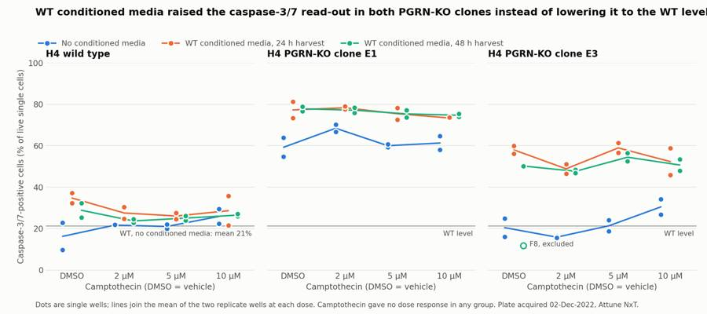
96
tool call · Bash
cd /task; sed -i "s/WT conditioned media raised the caspase-3\/7 read-out in both PGRN-KO clones instead of lowering it to the WT level/WT conditioned media raised, not lowered, the caspase-3\/7 read-out in both PGRN-KO clones/" work/figure.py && python3 -I work/figure.py
97
tool call · Read
{
"file_path": "/task/outputs/figure.png"
}98
tool output
(Bash completed with no output)
99
tool output
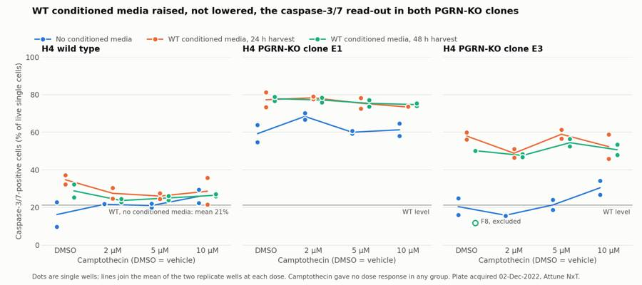
101
tool call · Bash
cd /task; cat > work/qcfig.py <<'EOF'
import sys; sys.path.insert(0,'/task/work')
from common2 import *
import matplotlib; matplotlib.use('Agg'); import matplotlib.pyplot as plt
# 1) verify manual vs flowkit counts
c=pd.read_csv('/task/outputs/counts.csv').pivot(index='well',columns='population',values='count')
bad=0
for w in lay.well:
d=gated(w); s=d[d.sing]; lv=s[s.sytox<2.5e4]
m=dict(cells=d.cells.sum(),singlets=len(s),live=len(lv),dead=(s.sytox>=2.5e4).sum(),caspase_pos=(lv.casp>=600).sum(),caspase_pos_total=(s.casp>=600).sum())
for k,v in m.items():
if abs(v-c.loc[w,k])>2: bad+=1; print('MISMATCH',w,k,v,c.loc[w,k])
print('mismatches >2 events:',bad)
# 2) gating QC figure
wells=['G1','G7','G8','G2','A12','B12','B4','C12','C4']
cc=150.
fig,axs=plt.subplots(3,len(wells),figsize=(3.6*len(wells),10.5))
cl=np.vstack([CELLS,CELLS[0]]); sg=np.vstack([SING,SING[0]])
for j,w in enumerate(wells):
d=gated(w); r=lay[lay.well==w].iloc[0]
ax=axs[0,j]; ax.hist2d(d['FSC-A'],d['SSC-A'],bins=160,range=[[0,1.05e6],[0,1.05e6]],norm=matplotlib.colors.LogNorm(),cmap='Greys'); ax.plot(cl[:,0],cl[:,1],color='#eb6834',lw=1.5)
ax.set_title(f"{w}: {r['sample']}\n{r.conditioned_media}\ncells {100*d.cells.mean():.0f}% of events",fontsize=9); ax.set_xlabel('FSC-A'); ax.set_ylabel('SSC-A')
k=d[d.cells]
ax=axs[1,j]; ax.hist2d(k['FSC-A'],k['FSC-H'],bins=160,range=[[0,1.05e6],[0,0.6e6]],norm=matplotlib.colors.LogNorm(),cmap='Greys'); ax.plot(sg[:,0],sg[:,1],color='#eb6834',lw=1.5)
ax.set_title(f"singlets {100*k.sing.mean():.0f}% of cells",fontsize=9); ax.set_xlabel('FSC-A'); ax.set_ylabel('FSC-H')
s=d[d.sing]
ax=axs[2,j]; ax.hist2d(np.arcsinh(s.casp/cc),np.arcsinh(s.sytox/cc),bins=160,range=[[-2,9],[-4,10]],norm=matplotlib.colors.LogNorm(),cmap='Greys')
ax.axhline(np.arcsinh(2.5e4/cc),color='#eb6834',lw=1.5); ax.plot([np.arcsinh(600/cc)]*2,[-4,np.arcsinh(2.5e4/cc)],color='#2a78d6',lw=1.5)
tk=[0,100,1000,1e4,1e5]; ax.set_xticks(np.arcsinh(np.array(tk)/cc)); ax.set_xticklabels(['0','1e2','1e3','1e4','1e5'])
tk=[-1000,0,1000,1e4,1e5,1e6]; ax.set_yticks(np.arcsinh(np.array(tk)/cc)); ax.set_yticklabels(['-1e3','0','1e3','1e4','1e5','1e6'])
lv=s[s.sytox<2.5e4]
ax.set_title(f"live {100*len(lv)/len(s):.0f}% of singlets; caspase+ {100*(lv.casp>=600).mean():.1f}% of live",fontsize=9); ax.set_xlabel('BL1-A (CellEvent caspase-3/7)'); ax.set_ylabel('BL2-A compensated (SYTOX AADvanced)')
fig.suptitle('Gating QC: cells (FSC-A/SSC-A polygon) > singlets (FSC-A/FSC-H polygon) > live (compensated BL2-A < 25,000) > caspase_pos (BL1-A > 600)',fontsize=12)
fig.tight_layout(rect=[0,0,1,0.97]); fig.savefig('/task/outputs/gating_qc.png',dpi=80)
EOF
python3 -I work/qcfig.py102
tool call · Read
{
"file_path": "/task/outputs/gating_qc.png"
}103
tool output
mismatches >2 events: 0
104
tool output
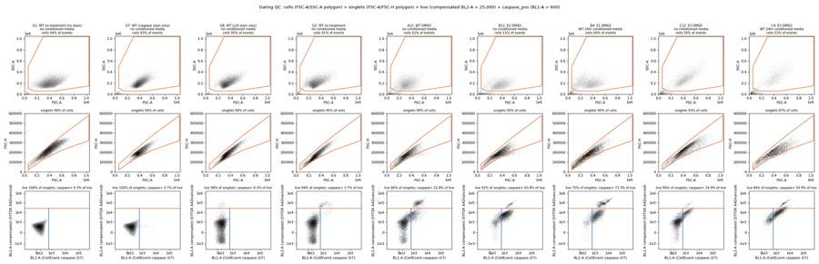
106
tool call · Bash
cd /task; cat >> work/analyse.py <<'EOF'
pd.set_option('display.max_columns',30)
print(use.groupby(['line','cm'])[['casp_live','casp500','casp1000','casp_tot','dead','bl1_med_live','cells','pct_cells','live']].mean().round(1).to_string())
print(use.groupby(['line','cm'])[['live','singlets']].min())
print(t.loc[['G1','G2','G3','G4','G5','G6','G7','G8'],['casp_live','casp_tot','dead','bl1_med_live','live']].round(2))
print(t[['all_events','live']].describe().loc[['min','max']])
EOF
python3 -I work/analyse.py | tail -32107
tool output
CM48h 76.2 79.0 64.2 81.1 20.5 1542.7 18600.0 69.6 13865.5
noCM 62.2 65.8 47.5 65.3 8.1 974.1 20968.0 57.8 17705.4
E3 CM24h 54.5 60.3 40.3 63.8 20.4 711.4 9525.1 53.2 6956.1
CM48h 50.8 57.1 36.1 59.7 18.0 619.6 9417.3 50.5 6909.0
noCM 22.0 27.2 12.0 28.7 8.8 297.8 11016.0 58.8 9440.8
WT CM24h 29.2 31.3 22.5 36.8 11.1 218.2 24749.6 67.2 20536.8
CM48h 26.0 27.9 20.0 34.4 11.7 210.9 22225.0 69.9 18171.8
noCM 21.2 23.5 14.7 30.8 12.4 200.1 24653.5 65.5 19983.4
live singlets
line cm
E1 CM24h 8274 12149
CM48h 7193 9551
noCM 10820 12427
E3 CM24h 3630 5296
CM48h 4679 6056
noCM 5563 6540
WT CM24h 13662 16399
CM48h 12692 15538
noCM 14711 17182
casp_live casp_tot dead bl1_med_live live
well
G1 0.26 0.26 0.00 93.0 23688
G2 3.75 8.40 5.94 148.0 20231
G3 5.71 11.76 6.79 172.0 28122
G4 5.94 11.97 6.76 173.0 26748
G5 8.23 10.95 3.15 232.0 11431
G6 7.27 12.12 5.59 239.0 11872
G7 4.65 4.65 0.00 136.0 21521
G8 0.32 0.33 2.43 109.0 21489
all_events live
min 11614.0 3630.0
max 47337.0 28122.0109
tool call · Bash
cd /task; cat > outputs/report.md <<'EOF'
# Caspase-3/7 conditioned-media plate, H4 WT and PGRN-KO (acquired 02-Dec-2022)
## Question
Can conditioned media from wild-type (WT) H4 cells bring caspase-3/7 activity in the H4 PGRN-knockout clones E1 and E3 back toward the WT level?
## Methods
**Channels.** The labels stored in the files are stale ("AAV-GFP" on BL1). From the plan's reagents and cytometer settings, BL1-A is CellEvent Caspase-3/7 Green and BL2-A is SYTOX AADvanced dead-cell stain.
**Compensation.** The file spillover matrix is an identity matrix, so I built one from the single-stain wells.
- CellEvent into BL2: 0.91, from the caspase-only well G7 (856 positive cells).
- SYTOX into BL1: 0.0006 measured in the dead-stain-only well G8, set to 0.
- The matrix is saved in `gates.xml` as `spill_ctrl` and applied to both fluorescence gates.
**Gates.** One strategy for all 80 files, saved in `gates.xml`; `counts.csv` was produced from the reloaded file. `gating_qc.png` shows the gates on nine wells.
| Population | Parent | Gate |
|---|---|---|
| `cells` | all events | Polygon on FSC-A / SSC-A; removes debris and events at the scatter ceiling |
| `singlets` | `cells` | Polygon on FSC-A / FSC-H |
| `live` | `singlets` | Compensated BL2-A below 25,000 (valley between the dim and bright SYTOX populations) |
| `caspase_pos` (read-out) | `live` | BL1-A above 600 |
| `dead` | `singlets` | Compensated BL2-A at or above 25,000 |
| `caspase_pos_total` | `singlets` | BL1-A above 600, dead cells included |
The 600 threshold leaves 0.26% of the unstained well G1 and 0.32% of the dead-stain-only well G8 positive.
**Metric.** Per well, caspase-3/7-positive cells as a percentage of live single cells. No normalisation.
**Grouping.** Each cell line, media and camptothecin dose has two wells. Camptothecin had no effect (see Results), so I also pooled the four dose levels to give 8 wells per cell line and media group. Pooled groups were compared with Welch's t-test and the Mann-Whitney test. These are wells on one plate from one experiment, so the p-values describe well-to-well consistency only.
**Quality checks.** Event rate over time, event counts, detector saturation, control behaviour and scatter identity of each well. `flags.csv` lists the result for every file.
## Results
**Main result (pooled over camptothecin doses, mean ± SD of wells).**
| Cell line | No conditioned media | WT media, 24 h harvest | WT media, 48 h harvest |
|---|---|---|---|
| WT | 21.2 ± 5.5% (n=8) | 29.2 ± 5.6% (n=8) | 26.0 ± 2.9% (n=8) |
| KO E1 | 62.2 ± 5.0% (n=8) | 76.1 ± 3.3% (n=8) | 76.2 ± 1.9% (n=8) |
| KO E3 | 22.0 ± 6.6% (n=8) | 54.5 ± 6.0% (n=8) | 50.8 ± 3.4% (n=7) |
- **E1 moved away from WT.** Conditioned media raised E1 by 14 percentage points at both harvest times (Welch p < 0.0001). Every conditioned-media well (72.6–81.2%) is above every no-media well (54.7–70.1%).
- **E3 moved away from WT.** Conditioned media raised E3 by 32 points (24 h) and 29 points (48 h). Ranges do not overlap: 45.9–61.3% against 15.5–34.2%.
- **WT rose slightly.** 8 points (24 h harvest, p = 0.012) and 5 points (48 h harvest, p = 0.05).
- **24 h and 48 h harvests did not differ** in either KO clone (E1 0.1 points, E3 3.7 points, p = 0.16).
- **Dead cells rose too.** SYTOX-bright cells went from 8% to about 20% of singlets in both KO clones with conditioned media; WT stayed at 11–12%.
**The KO phenotype appeared in only one clone.** Without conditioned media, E1 was 41 points above WT, but E3 matched WT (22.0% against 21.2%, p = 0.79). So for E3 there was no excess to rescue.
**Camptothecin gave no dose response.** Within each row and media group, the difference from the DMSO well was −1.4 points at 2 µM, −0.7 at 5 µM and +0.3 at 10 µM (n = 17 groups, none significant). The planned "enhanced under challenge" comparison therefore could not be made.
**The DMSO and 10 µM wells lost cells.** Relative to the 2 µM and 5 µM wells of the same group, the DMSO wells yielded 0.72× the cells and the 10 µM wells 0.76×; dead cells were 16.7% and 16.2% against 13%. This pattern follows the solvent, not the drug, if the vehicle was matched to the top dose. That is my inference; the plan does not give the DMSO concentration.
**Untreated wells were low in all three lines.** The stained, untreated wells in row G read 3.8% (WT, G2), 5.8% (G3/G4) and 7.8% (G5/G6). The plate wells with DMSO and no conditioned media read 16–59%. Most of the signal in rows A–F therefore comes from the plate handling (wash, media change, vehicle), which the untreated wells did not receive.
**The result does not depend on the gate choice.**
| Alternative read-out | E1: none → 24 h / 48 h | E3: none → 24 h / 48 h | WT: none → 24 h / 48 h |
|---|---|---|---|
| Caspase+ of all singlets (%) | 65 → 80 / 81 | 29 → 64 / 60 | 31 → 37 / 34 |
| Caspase+ of live, threshold 1000 (%) | 48 → 64 / 64 | 12 → 40 / 36 | 15 → 23 / 20 |
| Median BL1-A of live cells | 974 → 1536 / 1543 | 298 → 711 / 620 | 200 → 218 / 211 |
**Quality control.**
- No clogs or dry runs: no gap in the event stream longer than 0.4 s in any file.
- No well was short of events: the smallest live gate holds 3,630 cells (F4).
- **F8 excluded.** It reads 11.9% against 50.2% in its replicate C8 and 45.9–61.3% in the other 15 E3 conditioned-media wells, and looks like a well that missed its treatment. Including it would lower the E3 48 h mean from 50.8% to 45.9%.
- **D12 kept with a note.** It reads 9.7% against 22.9% in its replicate A12. Without it, the WT no-media mean is 22.9% instead of 21.2%.
- **G3–G6 labels look swapped.** G5/G6 (labelled E1) have the E3 scatter profile (31–33% of singlets with SSC-A above 400,000; E3 plate wells 27–46%, E1 wells 2–7%). G3/G4 (labelled E3) do not (2.6%). I kept all four with a note; no conclusion depends on which is which.
- **16 DMSO wells flagged as poor controls**, kept with a note, for the reasons above.
- **5 E3 wells flagged for scatter saturation** (more than 5% o
… [8,829 more characters not shown]110
tool output
[
{
"comparison": "KO E1: WT conditioned media (24 h harvest) vs no conditioned media",
"a": "E1_noCM_pooled_doses",
"b": "E1_CM24h_pooled_doses",
"direction": "increase",
"magnitude": "+13.9 percentage points of caspase-3/7-positive live cells (62.2% -> 76.1%); every conditioned-media well is above every no-media well",
"confidence": "medium"
},
{
"comparison": "KO E1: WT conditioned media (48 h harvest) vs no conditioned media",
"a": "E1_noCM_pooled_doses",
"b": "E1_CM48h_pooled_doses",
"direction": "increase",
"magnitude": "+14.0 percentage points of caspase-3/7-positive live cells (62.2% -> 76.2%)",
"confidence": "medium"
},
{
"comparison": "KO E3: WT conditioned media (24 h harvest) vs no conditioned media",
"a": "E3_noCM_pooled_doses",
"b": "E3_CM24h_pooled_doses",
"direction": "increase",
"magnitude": "+32.5 percentage points of caspase-3/7-positive live cells (22.0% -> 54.5%); ranges do not overlap",
"confidence": "high"
},
{
"comparison": "KO E3: WT conditioned media (48 h harvest) vs no conditioned media",
"a": "E3_noCM_pooled_doses",
"b": "E3_CM48h_pooled_doses",
"direction": "increase",
"magnitude": "+28.8 percentage points of caspase-3/7-positive live cells (22.0% -> 50.8%); F8 excluded",
"confidence": "high"
},
{
"comparison": "WT: WT conditioned media (24 h harvest) vs no conditioned media",
"a": "WT_noCM_pooled_doses",
"b": "WT_CM24h_pooled_doses",
"direction": "increase",
"magnitude": "+8.0 pe112
agent
Deliverables are written; running a final validation pass over formats and the numbers quoted in the report.
113
tool call · Bash
cd /task; cat > work/validate.py <<'EOF'
import pandas as pd, json, flowkit as fk, numpy as np, re, os
O='/task/outputs/'
lay=pd.read_csv('/task/inputs/plate_layout.csv')
g=fk.parse_gating_xml(O+'gates.xml'); print('gates:',g.get_gate_ids()); print('comp:', g.get_comp_matrix('spill_ctrl').matrix if hasattr(g.get_comp_matrix('spill_ctrl'),'matrix') else g.get_comp_matrix('spill_ctrl'))
c=pd.read_csv(O+'counts.csv'); print(list(c.columns), len(c), c.file.nunique())
assert list(c.columns)==['file','well','population','role','parent','count','pct_of_parent']
assert (c.groupby('file').population.apply(lambda s: tuple(s))).nunique()==1
print(c.groupby(['population','role','parent']).size())
ae=c[c.population=='all_events']; assert ae.pct_of_parent.isna().all() and (ae.parent=='none').all()
# recompute from saved gates for 5 files and compare
for w in ['A1','B4','F8','G1','G7']:
r=lay[lay.well==w].iloc[0]; s=fk.Sample('/task/inputs/raw/'+r.file); rep=g.gate_sample(s).report.set_index('gate_name')
for p in ['cells','singlets','live','caspase_pos','dead','caspase_pos_total']:
assert int(rep.loc[p,'count'])==int(c[(c.well==w)&(c.population==p)]['count'].iloc[0]),(w,p)
# pct check
cw=c.pivot(index='well',columns='population',values='count')
for _,r in c[c.population!='all_events'].iterrows():
assert abs(r.pct_of_parent-100*r['count']/cw.loc[r.well,r.parent])<1e-3
f=pd.read_csv(O+'flags.csv',keep_default_na=False); assert list(f.columns)==['file','well','issue_type','evidence','decision'] and len(f)==80 and f.file.nunique()==80
assert set(f.issue_type)<= {'none','clog','ran_dry','too_few_events','saturation','bad_control','mislabel','other'}
assert ((f.issue_type=='none')==(f.decision=='keep')).all() or (f[f.issue_type=='none'].decision=='keep').all()
assert all(re.search(r'\d',e) for e in f[f.issue_type!='none'].evidence)
print(f.groupby(['issue_type','decision']).well.apply(lambda s:' '.join(s)))
cs=pd.read_csv(O+'condition_summary.csv',keep_default_na=False); assert list(cs.columns)==['condition','wells','n_wells_used','mean','sd','metric_definition','normalisation_applied']
assert cs.condition.is_unique
excl=set(f[f.decision=='exclude'].well)
for _,r in cs.iterrows():
ws=r.wells.split(';'); assert len(ws)==r.n_wells_used and not (set(ws)&excl)
v=100*cw.loc[ws,'caspase_pos']/cw.loc[ws,'live']
assert abs(v.mean()-float(r['mean']))<0.01,(r.condition)
assert (r.sd=='')==(len(ws)==1)
if len(ws)>1: assert abs(v.std(ddof=1)-float(r.sd))<0.01
a=json.load(open(O+'answer.json'))
assert set(a['excluded_wells'])==excl
for k in a['comparisons']:
assert k['a'] in set(cs.condition) and k['b'] in set(cs.condition)
ma,mb=[float(cs.set_index('condition').loc[x,'mean']) for x in (k['a'],k['b'])]
print(f"{k['direction']:16s} {mb-ma:+6.1f} {k['confidence']:6s} {k['comparison']}")
print(a['overall_answer'][:60], a['assay_verdict'], a['next_action'], list(a['next_change'].keys()))
rep=open(O+'report.md').read(); print([l for l in rep.splitlines() if l.startswith('## ')])
print(sorted(os.listdir(O)))
# numbers used in the report
t=pd.read_csv('/task/work/table.csv').set_index('well'); l2=lay.set_index('well')
t['line']=l2.cell_line; t['cm']=l2.conditioned_media; u=t[[w[0] in 'ABCDEF' and w!='F8' for w in t.index]]
print(u.groupby(['line','cm'])[['casp_tot','dead']].mean().round(1))
EOF
python3 -I work/validate.py114
tool output
gates: [('cells', ('root',)), ('singlets', ('root', 'cells')), ('live', ('root', 'cells', 'singlets')), ('caspase_pos', ('root', 'cells', 'singlets', 'live')), ('dead', ('root', 'cells', 'singlets')), ('caspase_pos_total', ('root', 'cells', 'singlets'))]
comp: [[1. 0.91]
[0. 1. ]]
['file', 'well', 'population', 'role', 'parent', 'count', 'pct_of_parent'] 560 80
population role parent
all_events other none 80
caspase_pos marker_positive live 80
caspase_pos_total other singlets 80
cells cells all_events 80
dead other singlets 80
live live singlets 80
singlets singlets cells 80
dtype: int64
issue_type decision
bad_control keep_with_note A4 A8 A12 B4 B8 B12 C4 C8 C12 D4 D8 E4 E8 E12 ...
mislabel keep_with_note G3 G4 G5 G6
none keep A1 A2 A3 A5 A6 A7 A9 A10 A11 B1 B2 B3 B5 B6 B7...
other exclude F8
keep_with_note D12
saturation keep_with_note C10 C11 F9 F10 F11
Name: well, dtype: object
increase +13.9 medium KO E1: WT conditioned media (24 h harvest) vs no conditioned media
increase +14.0 medium KO E1: WT conditioned media (48 h harvest) vs no conditioned media
increase +32.5 high KO E3: WT conditioned media (24 h harvest) vs no conditioned media
increase +28.8 high KO E3: WT conditioned media (48 h harvest) vs no conditioned media
increase +8.0 low WT: WT conditioned media (24 h harvest) vs no conditioned media
increase +41.0 high KO E1 vs WT, both without conditioned media (is there a KO phenotype?)
no_clear_change +0.8 medium KO E3 vs WT, both without conditioned media (is there a KO phenotype?)
increase +54.9 high KO E1 with WT conditioned media (24 h) vs the WT level it was meant to reach
increase +33.3 high KO E3 with WT conditioned media (24 h) vs the WT level it was meant to reach
no_clear_change +0.1 high KO E1: 48 h vs 24 h harvest of conditioned media
no_clear_change +9.6 low WT, no conditioned media: 10 uM camptothecin vs DMSO vehicle (did the challenge work?)
no_clear_change +2.0 medium KO E1, no conditioned media: 10 uM camptothecin vs DMSO vehicle
no: WT conditioned media did not move either KO clone toward needs_optimisation repeat_with_change ['what', 'from', 'to', 'why']
['## Question', '## Methods', '## Results', '## Conclusion', '## Caveats', '## Recommendation']
['answer.json', 'condition_summary.csv', 'counts.csv', 'figure.png', 'flags.csv', 'gates.xml', 'gating_qc.png', 'report.md']
casp_tot dead
line cm
E1 WT 24hr conditioned media 81.1 21.3
WT 48hr conditioned media 81.1 20.5
no conditioned media 65.3 8.1
E3 WT 24hr conditioned media 63.8 20.4
WT 48hr conditioned media 59.7 18.0
no conditioned media 28.7 8.8
WT WT 24hr conditioned media 36.8 11.1
WT 48hr conditioned media 34.4 11.7
no conditioned media 30.8 12.4116
tool call · Bash
cd /task; python3 - <<'EOF'
p='/task/work/analyse.py'; s=open(p).read()
s=s.replace("add('WT_untreated_stained',['G2'])","""for line in ['WT','E1','E3']:
for d in ['DMSO','2uM','5uM','10uM']:
g=plate[(plate.line==line)&(plate.cpt==d)]
add(f'{line}_all_media_groups_{dose_name[d]}',list(g.index))
add('WT_untreated_stained',['G2'])""")
open(p,'w').write(s)
p='/task/work/answer.py'; s=open(p).read()
a=s.index(" comp('WT, no conditioned media: 10 uM camptothecin"); b=s.index("]\nans=dict(")
s=s[:a]+""" comp('WT, all media groups: 10 uM camptothecin vs DMSO vehicle (did the challenge work?)','WT_all_media_groups_DMSO','WT_all_media_groups_CPT10uM','no_clear_change','medium','; n=6 wells per group'),
comp('KO E1, all media groups: 10 uM camptothecin vs DMSO vehicle','E1_all_media_groups_DMSO','E1_all_media_groups_CPT10uM','no_clear_change','medium','; n=6 wells per group'),
comp('KO E3, all media groups: 10 uM camptothecin vs DMSO vehicle','E3_all_media_groups_DMSO','E3_all_media_groups_CPT10uM','no_clear_change','medium','; n=6 vs n=5 wells, F8 excluded'),
"""+s[b:]
open(p,'w').write(s)
p='/task/outputs/report.md'; s=open(p).read()
s=s.replace("# Caspase-3/7 conditioned-media plate, H4 WT and PGRN-KO (acquired 02-Dec-2022)\n\n","")
s=s.replace("| Caspase+ of all singlets (%) | 65 → 80 / 81 |","| Caspase+ of all singlets (%) | 65 → 81 / 81 |")
s=s.replace("so I also pooled the four dose levels to give 8 wells per cell line and media group.","so I also pooled the four dose levels to give 8 wells per cell line and media group. `condition_summary.csv` holds these pooled groups, every two-well condition, each dose pooled over media groups, and the row G controls.")
open(p,'w').write(s)
EOF
python3 -I work/analyse.py > work/analyse.log && python3 -I work/answer.py > /dev/null && python3 -I work/validate.py | sed -n '/increase/,/no: WT/p'; grep -n "all_media" outputs/condition_summary.csv | cut -c1-90; head -3 outputs/report.md117
tool output
increase +13.9 medium KO E1: WT conditioned media (24 h harvest) vs no conditioned media increase +14.0 medium KO E1: WT conditioned media (48 h harvest) vs no conditioned media increase +32.5 high KO E3: WT conditioned media (24 h harvest) vs no conditioned media increase +28.8 high KO E3: WT conditioned media (48 h harvest) vs no conditioned media increase +8.0 low WT: WT conditioned media (24 h harvest) vs no conditioned media increase +41.0 high KO E1 vs WT, both without conditioned media (is there a KO phenotype?) no_clear_change +0.8 medium KO E3 vs WT, both without conditioned media (is there a KO phenotype?) increase +54.9 high KO E1 with WT conditioned media (24 h) vs the WT level it was meant to reach increase +33.3 high KO E3 with WT conditioned media (24 h) vs the WT level it was meant to reach no_clear_change +0.1 high KO E1: 48 h vs 24 h harvest of conditioned media no_clear_change +0.4 medium WT, all media groups: 10 uM camptothecin vs DMSO vehicle (did the challenge work?) no_clear_change -1.7 medium KO E1, all media groups: 10 uM camptothecin vs DMSO vehicle no_clear_change +3.1 medium KO E3, all media groups: 10 uM camptothecin vs DMSO vehicle no: WT conditioned media did not move either KO clone toward needs_optimisation repeat_with_change ['what', 'from', 'to', 'why'] 47:WT_all_media_groups_DMSO,A4;A8;A12;D4;D8;D12,6,26.61,9.8,Per-well % caspase-3/7-positiv 48:WT_all_media_groups_CPT2uM,A3;A7;A11;D3;D7;D11,6,24.3,3.26,Per-well % caspase-3/7-posit 49:WT_all_media_groups_CPT5uM,A2;A6;A10;D2;D6;D10,6,24.05,2.76,Per-well % caspase-3/7-posi 50:WT_all_media_groups_CPT10uM,A1;A5;A9;D1;D5;D9,6,27.01,5.2,Per-well % caspase-3/7-positi 51:E1_all_media_groups_DMSO,B4;B8;B12;E4;E8;E12,6,71.43,10.2,Per-well % caspase-3/7-positi 52:E1_all_media_groups_CPT2uM,B3;B7;B11;E3;E7;E11,6,74.63,5.04,Per-well % caspase-3/7-posi 53:E1_all_media_groups_CPT5uM,B2;B6;B10;E2;E6;E10,6,70.26,8.23,Per-well % caspase-3/7-posi 54:E1_all_media_groups_CPT10uM,B1;B5;B9;E1;E5;E9,6,69.78,6.94,Per-well % caspase-3/7-posit 55:E3_all_media_groups_DMSO,C4;C8;C12;F4;F12,5,41.41,19.68,Per-well % caspase-3/7-positive 56:E3_all_media_groups_CPT2uM,C3;C7;C11;F3;F7;F11,6,37.46,16.8,Per-well % caspase-3/7-posi 57:E3_all_media_groups_CPT5uM,C2;C6;C10;F2;F6;F10,6,44.91,18.54,Per-well % caspase-3/7-pos 58:E3_all_media_groups_CPT10uM,C1;C5;C9;F1;F5;F9,6,44.5,11.98,Per-well % caspase-3/7-posit ## Question Can conditioned media from wild-type (WT) H4 cells bring caspase-3/7 activity in the H4 PGRN-knockout clones E1 and E3 back toward the WT level?
119
tool call · Bash
cd /task; python3 -I work/validate.py > /dev/null && echo VALIDATION_OK; ls -la outputs; python3 -I -c "
import pandas as pd; f=pd.read_csv('/task/outputs/flags.csv',keep_default_na=False)
for w in ['A4','F8','G3','G5','D12','C10']: print(w,'|',f[f.well==w].iloc[0].evidence,'\n')"120
tool output
VALIDATION_OK total 628 drwxr-xr-x 2 root root 4096 Nov 10 18:59 . drwxr-xr-x 5 root root 4096 Nov 10 18:47 .. -rw-r--r-- 1 root root 7276 Nov 10 19:00 answer.json -rw-r--r-- 1 root root 17128 Nov 10 19:00 condition_summary.csv -rw-r--r-- 1 root root 45762 Nov 10 18:53 counts.csv -rw-r--r-- 1 root root 184925 Nov 10 18:58 figure.png -rw-r--r-- 1 root root 12795 Nov 10 19:00 flags.csv -rw-r--r-- 1 root root 5456 Nov 10 18:53 gates.xml -rw-r--r-- 1 root root 329008 Nov 10 18:58 gating_qc.png -rw-r--r-- 1 root root 9312 Nov 10 19:00 report.md A4 | Vehicle control gives no baseline below camptothecin: caspase+ 32.2% of live vs 23.6% mean of the 2/5/10uM wells in the same row and media group (21.5-24.7%), and vs 3.8-8.2% in the untreated stained wells G2-G6. Dead 13.2% of singlets and 23430 cells recovered vs 9.1% and 29459 in the 2uM and 5uM wells. F8 | Outlier that behaves like a well that missed its treatment: caspase+ 11.9% of live vs 50.2% in its replicate C8 and 45.9-61.3% in the other 15 E3 conditioned-media wells; cells are 67% of events vs 46-59% in those wells. Scatter is E3-like, so cell line is right. Also a DMSO vehicle well and 8.9% of events at the SSC-A ceiling. G3 | Labelled E3 but scatter does not match the E3 wells: 2.6% of singlets have SSC-A>4e5 (E3 plate wells 27-46%, E1 1.9-6.6%, WT 4.5-7.3%) and median FSC-A 328k (E3 398-495k, E1 313-356k). G5/G6 (labelled E1) carry the E3 scatter profile, so the G3/G4 and G5/G6 labels look swapped; G3/G4 treated as E1 (presumed, cannot be told from WT by scatter). Caspase+ 5.7% of live. G5 | Labelled E1 but scatter matches the E3 wells: 31.0% of singlets have SSC-A>4e5 (E3 plate wells 27-46%, E1 1.9-6.6%) and median FSC-A 460k (E3 398-495k, E1 313-356k). Labels of G3/G4 and G5/G6 look swapped; treated as E3. Also 6.1% of events at the SSC-A ceiling. Caspase+ 8.2% of live. D12 | Replicates disagree: caspase+ 9.7% of live vs 22.8% in A12 and 20.0-29.5% in the other 7 WT no-conditioned-media wells; cells are 80% of events vs 59-67%. Kept because the deviation is smaller than F8 and there is no independent evidence of an error; group means are reported with and without it. C10 | 5.3% of events sit at the SSC-A ceiling (1048575) and 3.7% at the FSC-A ceiling; E3 cells are larger and SSC 290 V clips them. These events fall outside the cells gate, so the largest cells are not counted.
122
tool call · Bash
cd /task; sed -i 's/It reads 9.7% against 22.9% in its replicate A12/It reads 9.7% against 22.8% in its replicate A12/' outputs/report.md; sed -i 's/D12 kept with a note (9.7% vs 22.9%)/D12 kept with a note (9.7% vs 22.8%)/' work/answer.py; python3 -I work/answer.py >/dev/null; python3 -I work/validate.py >/dev/null && echo VALIDATION_OK; grep -c "22.8%" outputs/report.md outputs/answer.json
123
tool output
VALIDATION_OK outputs/answer.json:1 outputs/report.md:1
124
agent
The analysis is complete: the answer to the plan's question is **no**. WT conditioned media did not bring caspase-3/7 activity in either PGRN-KO clone toward the WT level; it raised it. All deliverables validate against the spec, and `counts.csv` was produced from the reloaded `gates.xml`.
Caspase-3/7-positive cells as a percentage of live single cells, pooled over camptothecin doses (mean ± SD of wells):
| Cell line | No conditioned media | WT media, 24 h harvest | WT media, 48 h harvest |
|---|---|---|---|
| WT | 21.2 ± 5.5% (n=8) | 29.2 ± 5.6% (n=8) | 26.0 ± 2.9% (n=8) |
| KO E1 | 62.2 ± 5.0% (n=8) | 76.1 ± 3.3% (n=8) | 76.2 ± 1.9% (n=8) |
| KO E3 | 22.0 ± 6.6% (n=8) | 54.5 ± 6.0% (n=8) | 50.8 ± 3.4% (n=7) |
- **Direction of the effect:** conditioned media raised E1 by 14 percentage points and E3 by about 30, with no overlap between treated and untreated wells in either clone. 24 h and 48 h media did not differ.
- **KO phenotype in one clone only:** without conditioned media, E3 sat at the WT level, so only E1 had an excess to rescue.
- **Camptothecin did not work:** 2, 5 and 10 µM were within 1.4 points of the DMSO wells on average, so the "under challenge" comparison could not be made.
- **Not evidence about progranulin itself:** the plate has no matched media control, so the rise is most simply a spent-media effect.
- **Background from handling:** the untreated stained wells read 3.8–8.2% in all three lines, against 16–59% in DMSO wells without conditioned media.
Verdict and next step: the assay needs optimisation. I recommend repeating with WT-conditioned media compared against KO-conditioned and mock-conditioned media, with progranulin confirmed by ELISA.
Judgement calls you may want to check:
- **Read-out:** I gated caspase-positive cells within live (SYTOX-negative) cells. Counting them within all singlets, or moving the threshold, gives the same direction.
- **Compensation:** the file matrix is an identity, so I built one from the single-stain wells (CellEvent spills 91% into BL2).
- **F8 excluded:** it reads 11.9% against 50.2% in its replicate; including it lowers the E3 48 h mean to 45.9%.
- **D12 kept with a note:** it reads 9.7% against 22.8% in its replicate.
- **G3–G6 labels:** the scatter profiles suggest the E3 and E1 labels on these untreated wells are swapped. I kept them with a note; no conclusion depends on it.
- **DMSO wells:** I flagged 16 as poor controls (kept), because the vehicle wells read as high as the camptothecin wells. This is the flag most open to a different reading.
- **Media source:** the three plate maps disagree on highlight colours, so which media went on rows D–F is not certain. I used the 02-Dec map.
I also added `gating_qc.png`, which was not requested, showing the gates on nine wells. The colour palette checker could not run here (no Node), so the figure uses the documented three-colour default unverified.
Files are in `/task/outputs/`:
- `report.md`
- `answer.json`
- `figure.png`
- `gating_qc.png`
- `condition_summary.csv`
- `flags.csv`
- `counts.csv`
- `gates.xml`
final result
The analysis is complete: the answer to the plan's question is **no**. WT conditioned media did not bring caspase-3/7 activity in either PGRN-KO clone toward the WT level; it raised it. All deliverables validate against the spec, and `counts.csv` was produced from the reloaded `gates.xml`. Caspase-3/7-positive cells as a percentage of live single cells, pooled over camptothecin doses (mean ± SD of wells): | Cell line | No conditioned media | WT media, 24 h harvest | WT media, 48 h harvest | |---|---|---|---| | WT | 21.2 ± 5.5% (n=8) | 29.2 ± 5.6% (n=8) | 26.0 ± 2.9% (n=8) | | KO E1 | 62.2 ± 5.0% (n=8) | 76.1 ± 3.3% (n=8) | 76.2 ± 1.9% (n=8) | | KO E3 | 22.0 ± 6.6% (n=8) | 54.5 ± 6.0% (n=8) | 50.8 ± 3.4% (n=7) | - **Direction of the effect:** conditioned media raised E1 by 14 percentage points and E3 by about 30, with no overlap between treated and untreated wells in either clone. 24 h and 48 h media did not differ. - **KO phenotype in one clone only:** without conditioned media, E3 sat at the WT level, so only E1 had an excess to rescue. - **Camptothecin did not work:** 2, 5 and 10 µM were within 1.4 points of the DMSO wells on average, so the "under challenge" comparison could not be made. - **Not evidence about progranulin itself:** the plate has no matched media control, so the rise is most simply a spent-media effect. - **Background from handling:** the untreated stained wells read 3.8–8.2% in all three lines, against 16–59% in DMSO wells without conditioned media. Verdict and next step: the assay needs optimisation. I recommend repeating with WT-conditioned media compared against KO-conditioned and mock-conditioned media, with progranulin confirmed by ELISA. Judgement calls you may want to check: - **Read-out:** I gated caspase-positive cells within live (SYTOX-negative) cells. Counting them within all singlets, or moving the threshold, gives the same direction. - **Compensation:** the file matrix is an identity, so I built one from the single-stain wells (CellEvent spills 91% into BL2). - **F8 excluded:** it reads 11.9% against 50.2% in its replicate; including it lowers the E3 48 h mean to 45.9%. - **D12 kept with a note:** it reads 9.7% against 22.8% in its replicate. - **G3–G6 labels:** the scatter profiles suggest the E3 and E1 labels on these untreated wells are swapped. I kept them with a note; no conclusion depends on it. - **DMSO wells:** I flagged 16 as poor controls (kept), because the vehicle wells read as high as the camptothecin wells. This is the flag most open to a different reading. - **Media source:** the three plate maps disagree on highlight colours, so which media went on rows D–F is not certain. I used the 02-Dec map. I also added `gating_qc.png`, which was not requested, showing the gates on nine wells. The colour palette checker could not run here (no Node), so the figure uses the documented three-colour default unverified. Files are in `/task/outputs/`: - `report.md` - `answer.json` - `figure.png` - `gating_qc.png` - `condition_summary.csv` - `flags.csv` - `counts.csv` - `gates.xml`